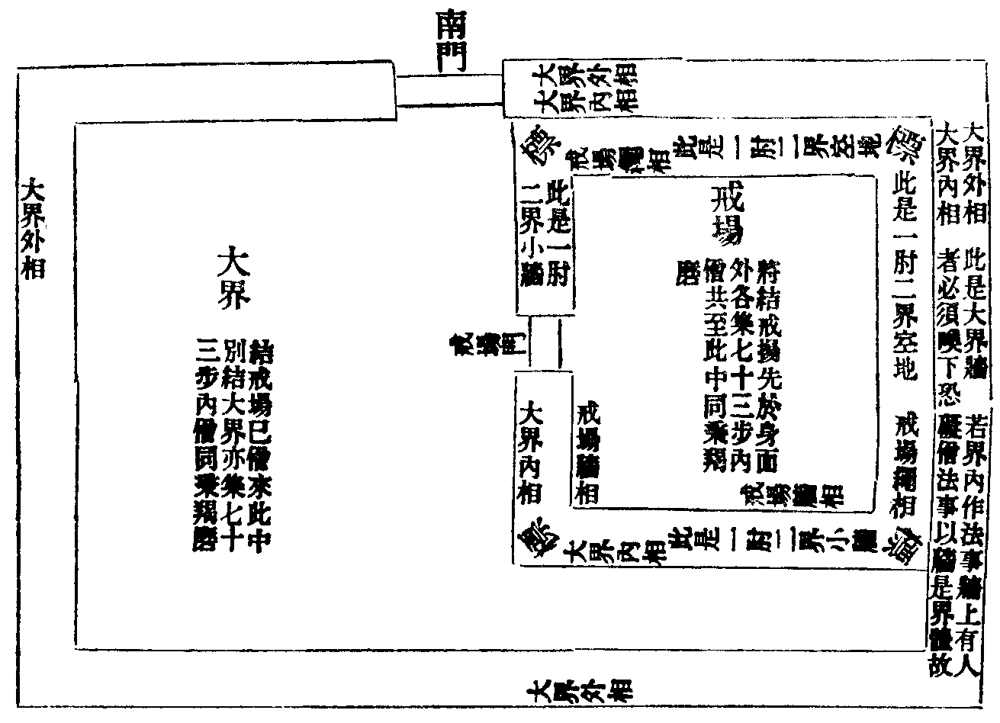

卍新纂大日本續藏經 第44冊
No.743 毗尼討要 (3卷)
【唐 玄惲纂】
第 1 卷
夫毗尼之典蓋闕隨葉所以運終木叉之教蔚興牟尼以之延祚良由戒為正法之綱紀慈訓之樞機故知猒俗求真是稱白法戒資定發唯曰清涼品類相從理路然矣自能仁利見肇啟斯宗弘五篇以勸善策七聚以懲惡防生漏於初歸滅心惑於將聖凡厥有祈孰不蒙潤洎調御稅駕羅漢護持遺風稍漸弗逮前蹤迄于像季日有澆漓百家之說波涌萬德之旨淪翳於是各述眾記繁略不同或編列參差行事出沒或僧尼別犯淆混同區競引浮辤朱紫相奪舛搆名言曲分岐路致使習者勞而少功學者博而寡要本欲助揚懿訓而及斁其彛倫可為歎息者深可為流涕者眾但道藉人弘理由教顯而弘道設教莫尚逗機應物適時務存省約依而翫習文露可尋余雖不敏忝參黌塾伏膺匪懈頗識宗塗故於聽覽餘隙厝心撰錄每一介可稱輙有懷三復漁獵經律捃摭眾記披忱研精冀存簡要立章四十勒成三卷上三十五章通戒僧尼時有異同並子注甄別下有五章偏勗尼眾今所撰者以四分為宗若此文不足則用諸部補闕其間紆義兼以人語潤色庶披覽易曉秉法無疑仰述舊章非敢穿鑿輙樹題目用防諸己有識君子幸無誚焉。
No. 743
毗尼討要卷上(正釋四分傍通諸部)
標宗勸學章第一
先約化中有四一曰小乘經者如般泥洹經云佛垂滅度世間無師阿難啟請佛言比丘若能奉戒者是汝大師若我住世無異此也遺教經云若無淨戒諸善功德皆不得生又因此戒得有定慧又經云戒者行根住持即喻大地能生成萬物故曰住持也二曰大乘經者如華嚴經云具足受持威儀教法行六和敬善御大眾心無憂悔佛說正法不違其教是故能令三寶不斷法得久住又偈云戒是無上菩提本應當具足持淨戒若能堅持於禁戒則是如來所讚歎大集經云菩薩請佛制於禁戒如餘佛土為法久住故佛許之大品經云我若不持戒當墮三惡道中尚不得人身況能成就眾生淨佛國土具一切種智薩遮尼犍經云若不持戒乃至不得疥癩野干身何況當得功德之身涅槃經云欲見佛性證大涅槃必須深心修持淨戒若持是經而毀淨戒是魔眷屬非我弟子我亦不聽受持是經月燈三昧經云雖有色壽及多聞若無戒智猶禽獸雖處卑下少聞見能持淨戒名勝士三曰小乘論者如成實論云道品樓觀以戒為廓禪定心城以戒為柱要佩戒印得入善眾毗婆沙云尸羅言冷謂無破戒熱及三惡道熱亦名為定若住戒者心易得定亦名為池群聖所浴故亦名為鏡由戒淨故無我像現四曰大乘論者如大智度論云若求大利當堅持戒如惜重寶如護身命以戒是一切善法住處又如無足欲行無翅欲飛無船欲度是不可得若無淨戒欲得好果亦復如是若棄捨此戒雖復山居服藥食草與禽獸無異若能持戒香聞十方名聲遠布天人愛敬所願皆得持戒之人壽終之時刀風解身筋脉斷絕心不怖畏地持論云三十二相無差別因皆持戒所得若不持戒尚不得下賤人身況復大人相報次約制中有二初述律本誠文者僧祇律云欲得五事利養當受持此律何等為五一建立佛法二令正法久住三不欲有疑悔請問他人四僧尼犯罪者為作依怙五欲遊化諸方而無有礙是為篤信善男子五利四分律云持律之人得五功德一戒品窂固二善勝諸怨三眾中決當無畏四所有疑悔善能開解五善持毗尼令正法久住十誦律云佛法幾時住世佛答隨清淨比丘說戒法不壞名法住世乃至三世佛亦爾次依論解者明了論云本音名毗那耶此略言毗尼也謂勝人所行事佛乃獨覺聲聞皆行其中凡人行者亦是勝人薩婆多論云佛告比丘戒有四義故毀者重於餘經一戒是佛法平地萬善由之生長二一切佛子皆依戒住若無戒者則無所依一切眾生由戒而有三戒是趣涅槃之初門若無戒者則無由得入泥洹城四戒是佛法瓔珞能莊嚴佛法也善見論云佛語阿難我滅度後有五種法令法久住一毗尼者是汝大師二下至五人持律在世三若有中國十人邊地五人如法受戒四乃至二十人如法出罪五以律師持律故佛法住世五千年五百問事云佛有二身肉身雖去法身在世若敬法念法者便敬佛念佛若持戒者即見法身若護法者便為護佛如半月說戒則見我也薩婆多論云何故律初集以勝故秘故如諸契經不擇時處人說而得名經律則不爾唯佛自說要在僧中故勝也分別功德論云由勝密故非俗人所行故不令見。
第二別約二教雜明違之致損者十誦律云像法時有五種法滅一比丘小得心已便謂證聖二白衣生天出家人入地獄三有人捨世間業而出家破戒四破戒人多人佐助五乃至羅漢亦被打罵又有五種怖畏一自不修身戒心慧復教他人令不修身戒等法二畜沙彌三與他依止四與淨人沙彌共住不知三相謂掘地斷草溉水五雖誦律藏前後雜亂四分律云有五種疾滅正法一有比丘不諦受誦律憙忘文句復教他人文既不具其義有闕二為僧中勝人上座一國所宗而多不持律但修不善後生倣習教捨戒行三有比丘持法持律持摩夷不教道俗便即命終令法斷滅四比丘難可教授不受善語餘善比丘捨置五共相罵詈互求長短疾滅正法又破戒人有五過失一自害二為智者所呵三惡名流布四臨終生悔五死墮惡道中律十誦律云雖受戒多歲不知五法者應盡形依止他一不知犯二不知不犯三不知輕四不知重五不廣誦戒通利又諸比丘廢學毗尼便讀誦修多羅阿毗曇世尊種種呵責乃至由有毗尼佛法住世因此多有上座長老比丘學律四分律云上座不學戒亦不讚歎戒有餘比丘樂學戒者不能以時勸歎我見如是上座過失故不讚歎恐餘人習學長夜受苦毗尼母論云百臈不知法者應從十臈知法者依止善見論云若不解律但解經論不得度沙彌及作依止師摩耶經云樂好衣服縱逸嬉戲奴為比丘婢為比丘尼不樂不淨觀毀謗毗尼互用三寶物等是名法滅盡相觀佛三昧經云犯四重虗食信施過煞八萬四千父母等罪梵網經云若佛子信心出家受佛正戒故起心毀犯聖戒者不得受一切檀越供養亦不得國王地上行不得飲用國王水土五千大鬼常遮其前鬼言大賊入坊舍城邑宅中鬼復掃其脚跡一切世人罵言佛法中賊一切眾生眼不欲見犯戒之人畜生無異木頭無異涅槃經云由諸比丘不持戒故畜八不淨財言是佛聽如何此人舌不卷縮智度論云何名為破戒人罪破戒之人人不愛敬其家如塚人所不到破戒之人惡心可畏譬如羅剎破戒之人人不歸向譬如渴人不向枯井破戒之人心常疑悔譬如犯事之人常畏罪至破戒之人如田破雹不可依仰破戒之人譬如苦瓜雖形似其種不可食破戒之人如賊聚落不可依止破戒之人譬如大病人不欲近破戒之人不可免苦譬如惡道難可得過破戒之人不可共止譬如惡賊難可親近破戒之人譬如火坑行者避之破戒之人難可共住譬如毒蛇破戒之人不可近觸譬如大火破戒之人譬如破船不可乘度破戒之人譬如吐食不可更噉破戒之人在好眾中譬如惡馬在善馬群中破戒之人雖形似比丘譬如死屍在眠人中破戒之人譬如偽珠在真珠中破戒之人譬如伊蘭在栴檀林中如是種種無量破戒之罪不可稱說行者應當一心持戒犯罪輕重經云佛告目連若比丘比丘尼無慚愧心輕慢佛語犯眾學戒如四天王天壽五百歲墮泥犁中於人間數九百千歲(〔私按為若約小數當九百萬若用大數則九十千世窃疑文誤〕)佛告目連若無慚愧心輕慢佛語犯波羅提提舍尼如三十三天壽千歲墮泥犁中於人間數三億六十千歲佛告目連若無慚愧心輕慢佛語犯波夜提如夜摩天壽二千歲墮泥犁中於人間數二十億四十千歲(〔私按二十下脫四字又二字錯合作一字〕)佛告目連若無慚愧心輕慢佛語犯偷蘭遮如兜卛天壽四千歲墮泥犁中於人間數五十億六十千歲(〔私按五十下脫七字據筭可知〕)佛告目連若無慚愧心輕慢佛語犯僧伽婆尸沙如不憍樂天壽八千歲墮泥犁中於人間數二百三十億四十千歲佛告目連若無慚愧心輕慢佛語犯波羅夷如他化自在天壽十六千歲墮泥犁中於人間數九百二十一億六十千歲都合總計僧尼於五篇七聚之罪且篇別單犯一罪論之如人間日月歲數總有一千二百六十一億五十千歲墮在地獄聖教不虗特須敬慎宜修方便撿察身口勵志專崇高慕前聖不得自怠輕蔑佛語故經曰正法住正法滅意在茲乎。
教興由致章第二
此章大門有二一明教興之意二明釋之次第。
第一教興意者問曰佛何故為諸弟子制此五部毗尼輕重不同使諸眾生互起是非耶答曰佛為比丘制一部戒律尚無二名何況有五但如來御世善達群情隨犯立制開塞當機迄于双樹在跡為周復有尊者波離翼宣斯教實師資之翹楚歷賢劫而一遇自如來滅影波離晦跡之後乃有迦葉阿難末田地商那和修優婆崛多此五羅漢繼踵傳持雖不逮前蹤亦其亞聖猶號為八十誦律略著篇題而未分部品至崛多之季世有哲王號為阿育稚尚玄宗虗心佛果乃遠招名德更刊三藏於是次後五人曇無德等各據師宗競執同異遂於毗尼一藏分為五部致使篇聚參差開遮有異雖覽文似乖而於義無失故經曰五部雖各別異而不妨諸佛及大涅槃。
第二譯之次第者(已下並依開皇翻經學士成都費長房三寶記錄)十誦律五十八卷(秦弘始六年十月十七日於中寺出見二秦錄)此之一部元有五十八卷至晉安帝世罽賓國三藏律師弗若多羅秦言功德華以戒節見稱遊歷行化羅既至止姚興即召常(以姚萇國諱故改為常也)安名德六百餘僧延請多羅憩於中寺誦出十誦律梵本鳩摩羅什度為秦文三分獲二一未竟而多羅奄然終卒眾咸痛惜什後又共曇摩流支秦言法樂續譯都訖毗尼誦三卷(是十誦後善誦見二秦錄)又安帝世罽賓國三藏律師卑摩羅叉晉言無垢眼姚秦弘始八年至常安羅什去世乃適壽春止石磵寺律徒雲集盛闡毗尼羅什十誦元有五十八卷至羅叉後開為六十一卷改善誦為毗尼誦故今有兩名律教東行十誦最初曇無德律四十五卷(秦言法藏此是人名則四分律主也今開為六十卷見晉世雜錄)此之一部元有四十五卷至晉安帝世罽賓國三藏法師佛陀耶舍秦言覺名弘始八年來到姑藏而什久已入於常安本在西域伏膺耶舍以為師處聞至姑臧大生歡喜則勸姚興令使迎逆興未然許之頃興命羅什出經而什又曰夫欲宣通無上法教宜令文義理趣圓通貧道雖復讀誦其文未善其理唯有耶舍深達經致今在姑臧願詔徵之一言三詳然後著筆使微言不墜取信千載也興遂從之則遣使厚加贈遺並皆不受笑曰明旨既降便應載馳檀越待士既厚脫如羅什見處則未敢聞命興歎其幾慎重信敦喻方至常安興自出候別立新省於逍遙園四事供養並無所受時至分衛一食而已舍為人赤髭善毗婆沙時人號之為赤髭毗婆沙什既師之亦稱為大毗婆沙四事供養衣鉢臥具滿三間屋不以關心興為貨之造玄寺舍而先甞誦四分律時請出之疑其遺謬乃試令誦差藉藥方可五萬言經一日覆不悞一字眾咸揖伏以弘始十二年譯四分等經律至十五年方始解座興施耶舍布絹萬匹悉皆不受沙門道含竺佛念等二人筆受各施千匹已外名德五百沙門皆重嚫施舍後還西不知所終律教東行四分第二僧祇律四十卷(晉義熙十二年十一月共法顯等譯見竺道祖錄及別錄或有三十卷)此之一部元有四十卷至晉安帝世北天竺國三藏禪師佛馱跋陀羅晉言覺賢於揚都及廬山二處譯沙門法業慧義慧嚴等筆受律教東行僧祗第三彌沙塞律三十四卷(見道慧〔宗〕齊錄別錄云二十四卷此疑悞也)此之一部元有三十四卷至廢帝熒陽王世罽賓國三藏毗尼師佛陀什宋言覺壽少受業於彌沙塞部專精律品兼達禪要壽以景平元年七月到於楊都先是法顯於師子國得彌沙塞梵本來未飜譯而遷化京邑諸僧聞佛陀什既善此學於是眾議請令出之則以其年冬十一月集龍光寺譯為三十四卷什執梵文于填沙門慧嚴等更互筆受參正文理儀同侍中瑯琊王練為檀越至二年十二月方訖律教東行五分第四解脫戒本一卷(興和二年出僧昉筆受出迦葉毗律大本不來)此之一卷至梁武帝世東魏南天竺國波羅柰城婆羅門瞿曇般若流支魏言智希於元象初至興和末在鄴城譯時有菩提流支雖復前後亦同出經而眾目錄相傳抄寫上去菩提及般若字唯云流支譯不知是何流支迄今群錄交涉相參謬濫相入難得詳定後賢愽採幸願討之律教東行解脫第五。
篇聚釋名章第三
此章大門有二一列數釋名二約性辨業。
第一列數釋名有五篇七聚約義差分說有七名結罪論實止標六法今先解七聚後釋五篇一波羅夷二僧伽婆尸沙三偷蘭遮四波逸提五波羅提提舍尼六突吉羅七惡說此之七名律無正翻且用義推略知途路初名波羅夷者僧祇義當極惡釋有三意一名退沒由犯此戒令道果無分二名不共住非失道而已更不入二種僧數一羯磨二說戒三墮落義捨此身已墮在阿鼻地獄十誦云墮在不如意處薩婆多云由與魔鬪以犯此戒便墮負處此律波羅夷者譬如斷人頭不可復起若犯此戒不復成比丘此從行法為名又云無餘者此從眾法絕分為名故偈云諸作惡行者猶如彼死屍眾所不容受以是當持戒又名不共住同前僧祇二名僧伽婆尸沙者婆沙云僧伽者名僧婆尸沙者名殘若犯此罪纏垢行人非全淨用有殘之罪由僧除滅故名僧殘毗尼母云如人為他所斫殘有咽喉故名為殘善見云僧伽者為僧婆者為初謂前與覆藏羯磨也尸沙者為殘謂後與出罪羯磨也若犯是罪僧作法除此從境立名三名偷蘭遮者善見云偷蘭名為大遮言鄣善道後墮惡道體是鄙穢此從不善以立其名明了論云偷蘭為麤遮耶為過麤有二種一是重罪方便二能斷善根所言過者不依佛所立戒而行故云過也四名波逸提者義翻為墮故十誦云墮在燒煑覆障地獄故名墮也此律初分三十戒因財生犯貪慢心強制捨入僧故名尼薩耆餘下提罪因事生犯單對人悔仍罪均一品同入第三篇攝出要律儀云尼薩耆者舊翻捨墮聲論云尼翻為盡薩耆為捨波逸提者本名波藥(夷割反)致也五名波羅提提舍尼者義翻云向彼悔從對治境以立其名僧祇云此罪應發露也即此四分具明悔過之辭明了論云波胝提舍尼者翻為各對應說謂對人說所作罪也六名突吉羅者善見云突者惡也吉羅者作也此律式叉迦羅尼者翻為應當學西域僧云翻為守戒也此罪微細持之極難故隨學隨守以立其名十誦律云以天眼見犯罪比丘如駛雨下豈非專翫在心名為守戒也七名惡說者此律第六聚攝義分有二初以身名惡作後以口名惡說故突吉羅後加一惡說合有七也據體論實的標為六約業不同故離有七問五篇七聚何意離分答義有三均故入篇攝一名均二體均三究竟均偷蘭惡說名義不均眾罪合雜統收為聚也其二不定若託境而言冠通七聚若論罪體生疑不信但是吉羅文標三二罪者略舉生疑之事餘義不盡如疏具述七滅諍中罪亦通有但為競於四諍彼此未和故制此七藥殄除罪爭文義既廣非此要所必有斯事冀尋本文。
第二約性辨藥者問三性心中並有犯戒義不答有一善心犯戒如薩婆多云年少比丘不知戒相塔上秡草罪福俱得僧祇云知事比丘闇於戒相互用三寶物或見人捨身心生悲歎助覓柴薪或見父母師僧犯於王法身處刑戮為覓刀繩願早離苦如是等事雖有善心不以無知得脫皆犯重罪以法是可學更加無知不學之罪乃至吉羅亦爾若論來報受罪則輕順本受心更不增罪違本受體不免地獄是名善心犯也二不善心犯戒者謂識知戒相或復無知輕慢聖教毀呰佛語故違禁制無慚無愧悔其意轉姧惡心漸熾名不善心犯也故明了論云有四種麤惡意犯罪一者濁重貪瞋癡二者不信業報三者不惜所受戒四者輕慢佛語故心而造則得重罪成實論云尤害心中煞蟻子重於慈心煞人波羅夷此人犯決定受苦以時報俱定故縱起心立治唯免制教一罪不妨業道終自不除如十誦云調達破僧犯蘭佛令僧中悔之而於業道尚墮阿鼻餘則亡言又十地經云作業有二一作業定二感果定諸佛威神所不能轉皆謂不善心犯也三無記心犯戒者謂無護戒之心隨流而造意無善惡卒爾而興名無記心犯也如愚癡比丘不識戒相縱放身口損傷物命斫伐草木媒嫁淨人互用眾物身壞威儀觸僧淨器如是等例並入無記門攝若據論宗亦有感報義問無記非業云何感報答感報有二一先有方便後入無記業成在無記心中故言感報而實無記非記果也二不感總報非無別受如經中頭陀比丘不覺煞生後被猪煞又五百問事云知事比丘悞觸淨器後作噉糞鬼等如成實論中睡眠成業亦是無記報問云何無記不受報耶答謂學知戒相善達持犯心常勗勵惔爾忘悞非意緣犯禁此開非犯如長衣過日不說淨善攝根門睡眠漏失悞墮椽梁傷煞人命如是等例並非結限又束此三心對境有二若犯性戒如煞盜等具受二罪謂業道違制以對情損惱故重若犯遮戒如傷草木等但得違教無業道罪以無情可惱故輕凡夫報欲居懷孰能無犯既犯則須懺淨還入僧數何意懷疾自垢心行不預清眾於理大悞律言斷頭者望現失道而論語其戒體實自清淨今時世人犯一婬戒初時惶怖後覆思維謂戒都無遂則雷同不禁根器隨境放情恣心造罪豈不由自闇於戒致悞流俗也如犯婬戒時餘煞盜等嚴然常淨況下餘篇理則亡言故薩婆多云寧可一時發一切戒不可一時破一切戒斯言有驗信知徵矣。
羯磨釋要章第四
第一辨意釋名者夫言羯磨義當辦事事非羯磨謂辦得前事有堪濟之功故稱言事故百論翻為事也正論羯磨乃是聲教業也故明了論疏翻為業也然僧為能秉之人羯磨是所秉之法前事復須如實三法支持事乃匡濟若一法乖違則難成辦故律云若作羯磨不如白法作白不如羯磨法作羯磨如是漸漸毀滅正法也。
第二統明一切羯磨之前必有由漸故有十緣不同一述事二約處三集僧四和僧五簡眾六陳意七與欲八問宗九答事十秉法一法不孤起必有所為之事其事是何謂結界等是若無其事法豈獨明故須先述其事雖有其事若也無處事無所依故次第二約處以論謂作攝僧界是唯除結界羯磨在自然界中已外並須託處故僧祇云非羯磨地不得行僧事亦須兼知結界元起成壞之相儻無結不成唐棄人功終無成辦雖有其處以法藉人弘若也無僧誰能秉法故次第三鳴槌集眾量僧多少觀時制度通識四僧用處差別雖復形集情若有乖法亦難辦故次第四眾中上座略和眾情告僧言大德等莫怪此集今有其事須作羯摩願僧慈悲同秉此法即須善識四分十五種默然之義謂事有是非人有忍拒不同是故須明眾雖和默人有非類若混雜同居時乖所應故次第五簡眾未受具者出復須知足數是非之相具如下說眾既純淨宜申本意故次第六正陳本意謂作舉作憶念隨僧乞辭等於中有四一順情為己多須乞辭如二房僧殘捨墮等是二違心立治及以無心領者則無乞辭如七羯磨治擯及顛狂人等是三僧創立法必須結界正此所明亦無乞辭四僧常行事亦無乞辭謂說戒自恣行籌等是然羯磨之體貴在詳遵形雖緣礙無妨心到故次第七與欲應和須知欲緣是非說之成不眾心既和未知竟作何事故次第八問其事宗僧今和合何所作為當羯磨師問不得餘人輙問既有問於前理須答遣故次第九隨事答云作某羯磨必題羯磨及所為之事雙告僧知不得單答其事如似答云布薩說戒者此直答其事然不通羯磨若答云說戒羯磨者此則事法雙告上來諸緣既備從此已下宜陳本意故次第十正作羯磨此之十緣汎顯次第未必一切羯磨皆具此十如結界等法則無乞辭說欲等緣又如受日說戒自恣等雖無乞辭不妨須欲如是綺互多少至時量作。
第三立法通局者就中分二初明攝法分齊後別舉羯磨釋其成壞初中分四一法二事三人四界第一法就辨者略有三種一心念二對手三眾法且列三位須知三名第一心念法者謂事是微小界中無人令自行得成無犯戒事發心念境口自傳情故云心念也於中有四一單心念二對手心念三眾法心念四體通心念初單心念者謂界通內外隨事自說縱令有人法亦得成如懺輕吉說戒座上發露先罪及六念等三二對手心念者謂本是對人之法由界無人佛開心念得成如此律安居十誦說淨受藥受七日五分受衣及捨善見受持鉢等七三眾法心念者謂本是僧法以界無人故開心念法亦得成如此律說戒自恣外部受僧得施分亡人衣等四四體通心念者謂法不局人人通多少縱界有僧法亦得成如受功德衣等一此之四法雖開心念若欲興念必假言教故毗尼母云心念必須口言若說不明了作法不成第二對手法中有二一單對手二眾法對手初單對手者謂是別人不關眾事縱界僧不集作法得成如受衣鉢等(總數二十九如大疏說)二眾法對手者同前眾法心念說戒等四第三眾法中有三一單白二白二三白四初單白者謂事輕小或是常制如說戒受懺等一白告僧事得成辦更無法續故云單白二白二者謂事涉於義義須通和一白牒告僧知一羯磨量其可不通白羯磨故云白二三白四者謂受戒懺夷情容乖舛自非一白告僧三法量可不焉能辦事以三通白故云白四若約羯磨總相都合一百三十四謂單白三十九白二五十七白四三十八若約別離分便有四十八謂心念十五對手三十三以別配總合有一百八十二問昔聞百一今不同者答謂總標位非的實數若引十誦百一是定問何以得知別人之法通名羯磨答此律三語受戒及白衣說法中言是羯磨十誦對手心念分衣亦名羯磨第二就事辨者謂羯磨所被事中通情非情並令前境是實方成法事若一緣有乖便差聖教如人法中不覆藏者與覆藏羯磨非法不成此謂無事有法如瞻波中應與作呵責乃作擯出此謂有病有藥施不相當佛判不成故知事者必須據實方稱聖教且約一事餘例之如實犯罪自言不犯實不犯自言犯等並名非法若實言實方符聖說非情明者如二房妨難不唱界相等羯磨不成如是鉾楯例准可知第三對人明者於中有三謂眾法對手心念初對僧有四謂四人僧五人僧十人僧二十人僧此之四種唯秉羯磨已外對手心念定不得行二對手中人局二三法通於眾就眾法對手中自然作法兩界無僧方得為之若數滿四宜改就僧若單對手縱令有僧各不相妨三心念有二若作眾法對手心念並界中無人方得法成若有一人名非法別眾若單心念弗論同別彼此有人兩不相妨第四就界辨者如下結界中說今正釋羯磨文中且就說戒單白分為五句一大(德姉)僧聽者勸警耳識鑒法得失二今僧白月十五日布薩說戒者正宣情事啟眾令知三若僧時到僧忍聽者正明僧若和集詳心審聽量其可不若僧時到者謂心和身集事順法應僧忍聽者勸令情和聽可勿事乖違四布薩說戒者重牒第二根本白意次判成就忍可所為五白如是者事既辦已白結告知次就羯磨法中明白者且約白四羯磨受戒初白論之然上已明恐初學未委重述令知就前白中還有五句一大(德姉)僧聽者筞動耳識勸審聽法二是某甲從(和上和上尼)某甲求受具足戒乃至(三衣五衣)鉢具(和上和上尼)某甲者此牒其緣正宣情事令眾量宜聽許可不三若僧時到僧忍聽者明心事既和願僧同忍四僧令授某甲具足戒(和上和上尼)某甲者正明忍可所為決判成辦五白如是者委眾令知。
次釋羯磨就中有三第一大(德姉)僧聽者告眾重聽事既非小宜共詳審第二是某甲乃至誰諸(長老大姉)忍者(諸者訓之此乃別問誰之忍不非謂總問僧也)此辨乞緣又牒根本謂今與某甲授戒等事量其可不三僧今與某甲授戒乃至誰不忍者說單牒根本之情決判早使成就第二第三亦如是說者略則事或疎闕繁則辭義盈穢故軌尅取中限至三也後結勸云僧已忍與某甲授具乃至如是持者此是付囑結歸非是羯磨正體於中剩辨是非者若事非大或無緣起則無乞辭又無牒事如說戒五句單白除第二四句成白未定存五乃至白二類准除之又單白文中第一第三第五文義俱通百三十四更無增減剋須通誦第二第四隨事牒緣文隨事顯故限局也義存啟眾故通一切辨羯磨中大德僧聽誰諸長老忍誰不忍者說僧已忍下文義俱通白二白四若作其法亦須通誦中間牒緣牒事隨遇隨稱俱事順合宜弗乖大軌縱片文紕於理靡墜上來所述鏡目啟心遇緣便作未假執文儻昏大旨縱誦猶謬問白讀羯磨作法成不答律無正文可以義求然羯磨戒本作法相似戒必令誦已然後得說今類羯磨豈得白讀故此律及僧祇中十五日無人能誦戒者應差人向他處誦得已還本處說不得重說乃至一人說一篇竟更一人說若不能誦者但說法誦經便罷終無白讀之法若執文得者何須苦抑令讀問尼與大僧得更互作羯磨不答此律十誦中尼與大僧作不禮不共語不敬畏問訊此三羯磨不須現前自言得作此律僧為尼得作五種羯磨謂受戒摩那埵出罪謫罸捨教授然捨教授一種律中但制羯磨名而不出羯磨文必有某事義作亦得如解淨地戒場等並無羯磨義作得成問得對尼三眾及沙彌白衣前作羯磨不答不得故律云應至不見聞處作唯除所為人得若依摩得勒伽十誦律等白衣前說戒成者唯有缾沙王及波斯匿王仍除王眷屬獨為王說令王心淨故亦不通諸臣百官等問羯磨所加得被幾人答此律為難事故得二三人一時受戒不得加四若諫惡和爭通多無妨問羯磨既竟位屬何處答謂第三僧已忍乃至和上某甲竟時是羯磨體不用第三說己名為竟也故律云忍者默然不忍者說今若不忍便成呵破既三忍無呵故知是竟。
結界興廢章第五
初釋界名者總有二種一曰自然界者未作法前但開隨境各有分限人所至處任運界起故曰自然二明作法界者由自然限約未得遂心設有寬狹教文已定用則不可故如來善巧曲順物情聽隨處結軌式楷定更無轉改故曰作法。
第二列數定量者汎論界有三種謂衣食二界非此所明僧之一界正此宣釋就中分三一大界者謂人法二同界次論量者此律同一說戒中為路遠故聽十四日說戒十三日先往不得受欲義准應有百里毗尼母云同布薩界極遠聽一日往還若極大結如前所明欲小結者下至容四人已上亦得薩婆多云尼結界者唯得方一拘盧舍義准五里儻有難緣通前百里律云以僧中數有四人眾起乃至二十人眾起令僧疲極佛言聽結戒場仍不云量有大小准善見戒場極小下至容二十一人便得減則不聽。
第三依位別解者住有三別若安戒場者先結戒場後結大眾今且論無者就中分二先出結界之緣後正加法初中分三一料簡是非二竪標唱相三集僧辨欲初中問曰大界內有村得合結不答得故五分云諸白衣新作堂舍為得吉利或為非人所惱請僧於中布薩故知得也薩婆多及四分並結取村也問界中有河得合結不答律云除常有橋船得合結若隔駛流無橋者不得義云若小水淺流者應得故下尼律云水者獨不能度今既得度明知得結問一標得作兩相不答一肘已上作相者得故明了論疏云如山東西各結別住者是(大牆類用亦得)。
二竪標唱相者先明竪標後明唱相問標相界體同異云何答標謂山石之物用為指的相即標畔界體之中界謂相內作法之所或標即體或標異體相必體外臨時處分並預委三若依四分界相不定是非故律云若東方有山稱山有塹稱塹草[卄/積]汪水糞聚釘杙空地露地等並得作相然空相一種結竟則須題記令後來比丘識知界相行法者無疑善見云界相有八種一山二石三林四樹五路六蟻封七江八水次明界形者善見云界形有五種一方二圓三皷形四半月形五三角形義云並隨屈曲方圓任地形結不要方正若先無相隨立一物作之亦得今時結者多是空地四方城邑隨有屈曲先須識過然後唱之云何名過謂前學未達後學未明若唱方相便容舛悞如從牆外唱云從東南角至西南角乃至一周訖寺南門外便成別眾以唱界時從牆基直過門能外便成界內脫寺中閇門作羯磨門限外有人不喚盡集豈非別眾若從牆內直唱復有別眾破夏離衣等過以界隨牆內起今既傍牆直唱門限內地便是界外若寺中作法有人說欲至門限內須有所作又來入界豈非別眾若為破夏有人在界安居明相未出至門限邊未還之頃明相已出便是界外豈非破夏云何失衣有人結不失衣界明相未出不持衣往門限內明相若出豈非失衣故須屈曲示知然後唱相不得籠通直過而唱儻有斯謬令他一生虗過故大集經云我滅度後無戒比丘滿閻浮提斯言實矣次明唱人是非者律云使舊住人唱未唱已前親自案行識知處所屏處闇誦勿使對眾致成蹇錯先須從東南角為始故律云東方有山稱山也此亦不定隨從一角逐穩而唱並得若在空野中結者先指四相示僧或樹石山水等隨有稱之然後僧中差一人唱被差人應起禮僧足立唱云大(德姉)僧聽我(比丘比丘尼)某甲今為僧唱四方大界相從東南角某樹直西下博地至西南角某樹從此北下博地至西北角某樹從此東下博地至東北角某樹從此南下博地還至東南角某樹是為大界相一周訖(一說便得)若在聚落城塹寺中結者多從牆內唱云從寺院大牆東南角內傍牆西下至南門東頰北土楞從此屈曲南出至門西頰北土楞從此傍牆西出至西南角內角從此傍牆北出至西北角內角從此傍牆東出至東北角內角從此傍牆南出還至東南角內角是為大界相一周訖(一說)若有俗家侵入寺腹或牆輕尖斜或寺有多門並須一一屈曲隨處唱之若有橫牆隔礙者當穿牆直過口唱便得。
三集僧遠近者若標相狹自然寬者應盡自然界集若標相寬自然狹者應盡標內集故僧祇避難界中三由旬內有比丘並須呼來若出界已作法結之諸師解云但盡自然集者亦得以自然界外非是攝僧之處又未加法何為不得耶僧祇盡標集者彼容難事恐成障礙故須盡集今解不然盡標者是一則深防二則僧祇有文若標內有村在自然裏不欲取者當遶村四邊唱內相後唱外相然後結界村內比丘不須外集若相內外有尼界者兩不相妨不須喚集若有作法攝僧界者但令比丘莫出自界通結裏取亦得如明了論圍輪別住等是問結界何為不得受欲者答具三義故不得受欲一結界是眾同之本理宜急制二自然界弱不勝羯磨故僧祇云非羯磨地不得作僧事三令知界畔護夏護衣護食別眾等過故十誦云作羯磨比丘死餘人不知界處佛令捨已更結故須盡集次正作羯磨上座問僧集和合已又問未受具足戒者出僧今和合何所作為答結大界羯磨大(德姉)僧聽此住處(比丘比丘尼)某甲唱四方大界相若僧時到僧忍聽僧今於此四方相內結大界同一住處同一說戒白如是(律雖不牒人名然復著無咎)大(德姉)僧聽此住處(比丘比丘尼)某甲唱四方大界相僧今於此四方相內結大界同一住處同一說戒誰諸(長老大姉)忍僧今於此四方相內結大界同一住處同一說戒者默然誰不忍者說僧已忍於此四方相內同一住處同一說戒結大界竟僧忍默然故是事如是持第二若安戒場結者應竪三標第一重者戒場外一肘自然內畔安一標此是戒場相第二重者次一肘自然外畔安一標此是大界內相第三重者大界外相周匝安一標此是大界外相先唱內標為首然後第二第三次第結之若先有牆者直指牆為[標*寸]相若先無者或以繩[打-丁+迸]圍或以樹山等並得作之具如上說其大界牆基無比寺者不問寬狹並得作相若有寺界相連或內安戒場者其二界牆基必須尺八已上方得為相故律云應留中間地恐二界相錯涉也義准下至應留一肘地計有尺八足分兩相多亦無妨上來所辨達律者無疑猶恐新學之徒未能曉會故略以畫圖冀補規路案圖行事庶免違失也。

今依此圖便有三相若唱大界外相必須在外唱之周匝屈曲一如前說若在牆內唱者至西南兩面自然地邊則與大界內相共合便不分彼此之異若無戒場者得從內唱若唱大界內相東北二邊有小牆者應傍小牆東南角外角唱穿小牆西入還傍大界南牆至西南角內角還傍大界內西牆直北穿小牆過然後屈曲唱之戒場外自然地者東北兩邊即用小牆為自然地西南兩邊則用一肘繩[標*寸]外為自然地若大界內先無相者應竪[標*寸]杙以繩連之當於戒塲東南角離大界南牆尺八地傍小牆基下釘一大杙直至西牆離西大牆內尺八地又釘一杙直北至小牆基下復釘一杙亦令遠大牆一尺八寸仍以繩連此三[標*寸]外為自然地其戒場相者東北兩邊則以小牆內畔為戒塲相西南兩邊則用繩[標*寸]內畔為戒塲相答此繩[標*寸]久固不壞者人在自然地內不妨戒場內得成法事以識知界相故若此繩[標*寸]破壞無者後時客比丘來不知界畔容可向自然地內坐立或來去不定恐破僧法事臨危事嶮可懼之甚無知如此若大界牆基闊二尺已上者唱此一肘自然地縮入大界牆內最為穩審以界是色法入實無妨計一肘自然地止可尺八殘有二寸便是大界牆體足辨兩界之相上來所明聊寄一物作此界體而界相眾多未必如圖至時稱事任補茲處於戒塲門內亦應屈曲唱出恐有繁重不能更述若結二界應先結戒場後結大界故五分亦令先結若先結大界者當捨已前結戒場後結大界又毗尼母云外更不結大界直結小界者亦不得受具問先結大界後結戒場成不答五分應捨更結故知得成以不成後法故須解之五百問事云後結戒場者於中受戒恐無所獲又云不知同於未制賴有此路則通僥倖義云今時結者濫法眾多不可具述且辨成文非義自露如前聖教所明則戒場先定也既知如是若欲唱結各當界為之不得彼此遙作便自然界僧盡集戒場所令一舊住比丘起具修威儀立唱云大(德姉)僧聽我(比丘比丘尼)某甲為僧唱戒場四方小界相從東南角內[標*寸]傍繩西下至西南角內[標*寸]從此傍繩北下至西北角內[標*寸]又傍小牆東下至東地角內角從此南下至東南角內[標*寸]此是戒場相一周訖(一說)上座問僧集和合已又問未受具者出僧今和合何所作為答結戒場羯磨大(德姉)僧聽此住處(比丘比丘尼)某甲唱四方小界相若僧時到僧忍聽僧今於此四方小界相內結作戒場白如是大(德姉)僧聽此住處(比丘比丘尼)某甲唱四方小界相僧今於此四方小界相內結戒場誰諸(長老大姉)忍僧今於此四方小界相內結戒場者默然誰不忍者說僧已忍於此四方小界相內結戒場竟僧忍默然故是事如是持。
次明結大界者唱相有三一先唱內相二唱外相三唱竟總結今先唱大界內相云大(德姉)僧聽我(比丘比丘尼)某甲為僧唱四方大界內相從小牆東南角外角穿小牆西出傍大牆內至西南角內角從此傍牆北下穿小牆直過至小牆西北角外角從此傍小牆東下至小牆東北角外角從此傍小牆南下還至小牆東南角外角此是大界內相一周訖(一說)次唱外相者應從寺院外牆東南角外角為始大(德姉)僧聽我(比丘比丘尼)某甲為僧唱四方大界外相從寺院外牆東南角外角傍牆直西下至南門東頰外土楞隨屈曲出至門西頰外土楞從此西下至西南角外角從此北下至西北角外角從此東下至東北角外角從此南下還至東南角外角此是大界外相一周訖(一說)第三唱已總結云此為外相彼為內相此是大界內外相一周訖結已應告僧云已唱大界內外相竟眾僧應作羯磨唱者復坐已上座問僧集和合已又問未受具戒者出僧今和合何所作為答結大界羯磨大(德姉)僧聽此住處(比丘比丘尼)某甲唱四方大界相若僧時到僧忍聽僧今於此四方相內結大界同一住處同一說戒白如是大(德姉)僧聽此住處(比丘比丘尼)某甲唱四方大界相僧今於此四方相內結大界同一住處同一說戒誰諸(長老大姉)忍僧今於此四方相內結大界同一住處同一說戒者默然誰不忍者說僧已忍於此四方相內結大界竟僧忍默然故是事如是持義云但依文結不須改云僧今於此四方內外相內結作大界但以身望相便通內外又以界望相界皆相內以相望界相皆界外是故依文不須改。
次剩明解界法者先解無戒場大界法上座問僧集和合已又問未受具戒者出不來諸比丘說欲一一答已又問僧今和合何所作為答解大界羯磨(自下諸篇羯磨門緣多少並同此四但隨牒而稱答事有異出功德衣法中也)大(德姉)僧聽此住處(比丘比丘尼)同一住處同一說戒若僧時到僧忍聽解界白如是大(德姉)僧聽此住處比丘同一住處同一說戒今解界誰諸(長老大姉)忍僧同一住處同一說戒解界者默然誰不忍者說僧已忍同一住處同一說戒解界竟僧忍默然故是事如是持若有戒場者先解大界後解戒場此是常式上座問答隨事別稱不同受戒一答得作眾多羯磨彼由同界故得此中為隔自然兩界各別作法故不通也。
次解戒場者正解戒場時還須在戒場內不得在大界遙解律無解文今准難事解界但飜結為解理通文順也問僧今和合何所作為答解戒場羯磨大(德姉)僧聽僧集此處解戒場若僧時到僧忍聽今解戒場白如是大(德姉)僧聽僧集此處解戒場誰諸(長老大姉)忍僧集此處解戒場者默然誰不忍者說僧已忍解戒場竟僧忍默然故是事如是持善見云戒場上不得立房縱使王立有慚比丘剔壞餘材草送住寺比丘唯置佛殿及樹木也義云西國戒場多在露地如世祭壇郊祀之所大唐三藏波頗師等並云壇也故律中多稱戒壇也五百問事云受戒值天雨若移戒場屋下者先解大界更結戒場及結大界方得。
第四辨界成壞者此律治故伽藍不失淨地若疑應捨已更結善見云依相結已後失界相界亦不失小法滅盡經云劫火起時曾作伽藍所不為火燒乃至金剛界為土臺也縱令惡心解界界亦不失。
鳴槌集眾章第六
今先解初門將欲鳴槌先須施座故律云當敷座打楗盡集一處出要律儀引聲論翻楗槌云(巨〔塞〕反)槌(音地)此云磬也亦名為鍾十誦云時僧坊中無人打楗槌相續鋪牀教人淨菓菜眾亂語時無人彈指等佛令立維那聲論翻為次第也故五分云打三通也後因他請方有長打付法藏傳云昔有國王名罽眤吒多行暴虐生大海中作千頭魚劒輪迴注斬截其首續復尋生次第更斬如是展轉乃至無量須臾之間頭滿大海時有羅漢維那打楗槌聞便劒止苦痛小息王則白言唯願大德若鳴楗槌延令長久為長打已過七日竟便受苦畢長打迄今意兼濟物故增一阿含經云若打鐘時一切惡道諸苦並皆停止又說二偈得除五百億劫生死重罪降伏魔力怨除結盡無餘露地擊楗槌比丘聞當集諸欲聞法人度流生死海聞此妙響音善當運集此既知如是維那將欲鳴鐘先具威儀禮十方佛已至誠為物召集凡聖之意然後漸漸生槌令從微至著不得麤心大打驚動眾心法用甚多不能具述略申此意行者宜知五分云布薩不時集妨行道佛言唱時至若打揵槌若打皷吹螺使舊住沙彌淨人打不得多打應打三通吹螺亦爾除漆毒樹餘木銅鐵瓦鳴者聽作住處多不得遍聞應高處唱猶不知集應更相語知若無沙彌淨人比丘亦得打十誦云居士請僧自於寺內鳴槌乃至白時至及送食女人亦自鳴槌中食施者亦爾此律集僧有七法謂量影破竹作聲放煙吹貝打鼓打楗槌若唱時到亦言沙彌為之(今時諸寺亦有不許沙彌白衣鳴鐘者此迷教甚矣)。
第二集僧遠近者略有二種一作法二自然若作法界攝僧必須盡界內集若自然界攝僧隨處遠近則有四別一聚落二蘭若三道行四水界此四種皆不為物造隨人所居則有分局故曰自然第一聚落量者於中有二可分別聚落二不可分別聚落先明可分別者謂城外村坊及邊夷城邑等人民希尠可得分別隨義立名則准十誦云於無僧坊聚落中初作僧坊未結界時隨聚落界是僧坊下文齊行來處此內不得別眾此應是可分別聚落也此律聚落界取某院相二不可分別聚落者謂中花之處人民繁多不可分別隨義立名則准僧祇云若城邑聚落界分不可知者用五肘弓七弓種一樹齊七樹相去使異眾相見不犯別眾各得成就此應是不可分別聚落也義准通相計七樹六間有六十三步若取樹兩頭各有半蔭便有樹七間得七十三步半問蘭若處有僧坊欲結界何處集僧答十誦云隨聚落界則僧界令周匝院相與聚落之相不別未須五里集人故下文云無聚落蘭若初起僧坊乃云一拘盧界故知先有僧坊則同村界律中僧村四相二界不別必院相不周始得依蘭若集僧第二蘭若界者統明蘭若乃有多種謂頭陀寄衣盜戒僧界衣界等未明餘界且解僧界蘭若者四分無文諸部言各不定雖未依准而並言蘭若者一拘盧舍等如雜寶藏中拘盧舍者五里也相傳用此為定耶舍傳云拘盧舍者大牛鳴音也其音聞於五里若有難不得五里集者則依善見論阿蘭若界者極小方圓七槃陀一槃陀二十八肘若不同意者七槃陀外得作法事計有百九十六肘肘各尺八總有五十八步四尺八寸集僧既言不同意者應是難故開也第三道行界者薩婆多云比丘遊行隨所住處縱廣有拘盧舍界此中不得別食別布薩亦不明大小此論解十誦文言六百步為拘盧舍第四水界者五分云水中自然者若在水中行眾中有力人水灑所及處名界善見云若擲水若散沙已外比丘不妨聚水常流處深淺皆得作自然潮水不得若船上布薩應下礩不得繫著岸及水中樹根為與陸地界相連若水中木石樹等悉是水界自然攝謂離地者得問前言不可分別聚落六十三步者為身四邊各取六十三步為一面取三十一步半耶答若四面有人各取六十三步故彼文云七樹中間異眾相見不犯別也問若彼此俱秉眾法者自然界體寬狹云何答諸說者不同今義解云彼此二眾亦各有六十三步不問秉法不秉法界恒一定故僧祇云異眾者望二處比丘身也既言七樹中間異眾相見而不犯別者此則文順理通於義有餘無所疑也問既二眾相望通用六十三步者此便二界相重若為分其界相答若是作法界者必須留其分齊不得兩界交涉今是自然攝僧之處通用無妨。
第三明集僧多少者總明僧有四種初明四人僧者謂說戒捨墮等是二明五人僧者謂邊地受戒自恣等是若據僧祇捨墮懺罪亦入五人僧攝以懺主作單白和僧時自為他量不入僧數至受懺時還在數中則類自恣展轉共相足數亦爾以四分不了故取僧祇三明十人僧者謂中國受戒等是四明二十人僧者謂懺僧殘出罪等是尼眾出罪僧尼各須二十不同大僧也義云前四種僧各據自行為言並須清淨以犯小罪不應羯磨故若據眾法則有二種若為說戒懺罪等必須清淨以有犯者不得說戒不得聞戒不得向犯者懺悔犯者不得受他懺悔若為受戒生善門者未必取體但使相淨令前人起尊重心便成法事故律云弟子雖知和上犯重而不知向如是人邊受戒不成亦開成受當知但取其相不論其體。
足數興廢章第七
此章大門有二一足數是非二別眾是非。
初足數是非者十誦十一人不足僧數謂睡眠比丘若聞白已睡者得成擯人故知未白已前不足數亂語人憒閙人入定人啞人聾人啞聾俱人狂人亂心人病壞心人樹上比丘等並不足數摩得勒伽有三人不足數謂重病人邊地人癡鈍人等授戒自恣一切不成足數僧祇有六人不足數謂和上足十人授戒不成若與欲人若隔障若半覆半露中間隔鄣若半覆半露申手不相及露地不相及乃至行作羯磨坐則犯別住坐臥互乖亦爾義加醉人亦不足數十誦白衣亦不足數薩婆多佛亦不足數上來諸部總有二十三人不足僧數此律有二十八人不足數謂為比丘作羯磨比丘尼足之及式叉摩那沙彌沙彌尼十三難三舉滅擯應滅擯等此二十二人由非類故不足數別住戒場上神足在空隱沒離見聞處此等五人雖是同類由不與僧居相中是乖故不足數所為作羯磨人由為僧量故不足數和上一人唯不受戒羯磨數由為他量故呵責擯出依止遮不至白衣家等四人得應一切羯磨用覆藏本日治摩那埵出罪等四人及十誦中行覆藏竟本日治竟摩那埵竟合有七人不足覆藏等四種羯磨僧用得應餘法事用大師云十誦烏迴拘羅撻利吒比丘等以是治僧官人故唯不足擯羯磨僧用此解恐非得應一切羯磨僧用何意得知彼秉法擯人既成何為不足數也又自身作羯磨不同和上自不作法為他羯磨師所量故不足數義云十三難等若未自言已前同僧法事並得成就若雖自言當作法時無人知者亦成僧事由相中無違辦得前事故律云不得以天眼觀他淨穢應以肉眼看也十誦云若犯重罪人賊詐比丘本白衣時破戒人等若先言有過後作羯磨不成若不言者一切法成乃至亦不聽天眼看他持犯也義云自言者要告前人云我犯婬盜等令前人了了知解方成自言若雖不自言然眾僧並知是犯重十三難等舉國知聞眾人共悉此等諸人不待自言亦不足數假令眾中作法不喚無過若爾何故律云並要若自言等又不應以天眼觀他淨穢當以肉眼看耶答律要自言者據不知者今既知犯豈待自言又不許天眼觀應以肉眼看我還以肉眼看不以天眼觀何為得足數故羅婆多云犯重比丘眾僧知犯不須自言及以現前直爾滅擯駈出義云若審知有此犯重過人其人凶惡不可簡別者秉法之人若在露地作法必須肩膝相柱周迴而坐不得簡隔好人單行而坐身既不足數隔他好人便是露地申手之外豈非別眾過也既知如此秉法之時須密為此事不得語前人令知反成凶熾法亦難辦今時多有此事故別[標*寸]記若非露地同在堂內雖好惡相參法成無過。
第二別眾是非者謂同一界內相中有乖與僧不同故云別眾律云應來者來是身口心俱集二應與欲者與欲謂口心集身不集三現前得呵人不呵謂身口集心不集雖嘿不呵亦名和合故律云應呵者不呵也又下文見他如法羯磨而心不同應作嘿然住之是名如法又六群比丘往說戒處立而不坐佛言非法五分云病人背羯磨佛言犯別眾義云夫論眾法但取威儀之相不用心之虗實但令相隨順心違便成法事故律云見如法羯磨而心不同得名如法當知但取相如不論心非若欲秉法同知待答人坐竟然後為之亦有立成者除所為作羯磨人以被治故不足數雖立得成若乞受戒懺悔等坐乞最好未見正文義立如此秉羯磨人中立得成者唯除二人威儀師秉單白以為僧所使不得輙坐二立說戒者為眾聞故自餘一切並須坐秉也。
受欲成壞章第八
初制意釋名者凡言欲者多以悕須為義謂心口應法事得成辦脫有緣差不遂情願聖開送心表無乖異故稱欲也摩得勒伽云何名欲者謂所作事樂隨喜共同如法僧事也次辨欲體者欲之所須大意有二自有僧私俱須者如說戒自恣等是以佛正制若叛得罪自有單僧須者如受戒受日等是謂僧須我和我未必須以佛不正制故。
第三受緣是非者若有犯戒事非法緣等以事非故並不合與欲若稱開事並皆得成故律云佛法僧塔及看病病人此等六緣是佛正制得成與欲而六群比丘作衣事亦得說欲然非正制義云今時多有比丘輕慢佛語妄行聖教謂實無病稱病不欲言欲不淨言淨令他傳此妄語對眾而說隨僧多少一一人邊獲三波逸提所傳之人知而妄告一一人邊亦得三罪若能傳所傳之人汎爾說者不犯提罪容得吉羅罪問無病既不合說欲得成法事不答得成前人自有妄語之罪。
第四說欲法者(此律正本不牒其事今之著者乃是人加由羯磨中不牒不安者成文仍不具今義正云也)大(德姉)一心念某甲(比丘比丘尼)如法僧事與欲清淨(一說便得)上明自說法下明轉欲兼他法謂受他欲已自有緣事須轉與他聖教亦開之問得幾度轉答毗尼母論得七返轉大(德姉)一心念我某甲(比丘比丘尼)受某甲(比丘比丘尼)欲清淨彼及我身如法僧事與欲清淨一說問欲與清淨異相云何答欲應羯磨清淨應說戒若說之時二俱須牒此律後制不同僧祇行前廢教律云若重病人不能廣說欲者聽若言我說欲若言與我說欲若言為我說欲若現身相等皆成與欲反上不成問之餘語可解若為現相答五分云病人不能口說聽現身相與清淨欲若舉手舉指搖頭乃至舉眼得名與清淨欲義云律雖如此若取欲者必須識其瞋喜之相方得成就若瞋心不同而舉眼者雖取不成終為別眾律云若不憶字稱姓亦得若眾多比丘隨能記者一時合說並成問對僧說欲言詞閙亂一時總說得成以不答此律無文得不難知雖無正斷若有難事定應得成若無難事准其外律良恐不成故五分僧祇令至僧中稱名字說若不如是一一不成問說欲人多在坐人少得成以不答四分文不了但言隨意多少受而不云成不若依諸部良恐不成故僧祇云與欲人若等若多作布薩得越毗尼罪五分云聽多人集持欲人來少次明對僧法羯磨師云不來者說欲應云大(德姉)僧聽某甲(比丘比丘尼)我受彼欲清淨彼如僧事與欲清淨(一說)此律若受他欲來自有緣事不得往者應對僧說云大(德姉)僧聽我某甲(比丘比丘尼)彼某甲(比丘比丘尼)我受彼欲清淨彼及我身如法僧事與欲清淨(一說)若自有緣說付僧者應云大(德姉)僧聽我某甲(比丘比丘尼)如法僧事與欲清淨(一說)此律無文僧祇中病比丘與比房比丘欲不受自入僧中說佛言善作如法不受者得罪四分無三遍說欲文一說便得故律中所有羯磨及諸法事須加三遍者皆云第二第三亦如是說其不著者定知一遍今時不學律者舉世漫諍令他三說縱令僧祇有三說文亦不合抑他四分亦同三說又四分僧祇說文各別何得將僧祇文同四分說剩解失欲法者此律有二十一種謂十三難三舉滅擯應滅擯此十八人受他欲已自言我是十三難等並皆失欲法者此律相中同順得成持欲五分自說罪人不名持欲反即成也此律又有七種人若命過餘處行罷道入外道眾別部眾至戒場上若明相出並皆失欲問餘語可解云何名餘處行答謂將他欲出界已還來入眾者不成持欲名餘處行也自恣文中改餘處行名出界外此律又有兩種謂神足在空隱沒離見聞處問離見聞處者為俱離失為互離失耶答俱離故失謂望比坐見聞俱離也故五分中謂在同處相離雖說不成義云又有七人不成與欲尼下四人狂等三人僧祇有五失欲法一在界外與欲二持欲人出界三與欲已自身出界四與欲已至僧中嘿還出眾五持欲至僧因難驚起無一人住者名壞眾失欲十誦與別住人欲失謂行覆藏竟本日治竟摩那埵竟義云如是等人並不成說欲亦不成持欲知而故為反自得罪故律云如是等皆成與欲當更與餘者欲若病重不堪說欲僧就作法若病人多不可集者僧出界外作羯磨若受欲已至僧逢難出界還來欲法得成必有難界內不往僧所作法不成故律云有比丘無想羯磨不成問受欲遇緣不說成不答律云受欲人若睡眠入定及忘悞不說者皆成若故不說得罪問得成不答成問與欲已前事訖不來犯別眾不答不犯以我情和至僧不關欲緣事也故律云若事休應往不往如法治然不云成不計理得成。
毗尼討要上本
毗尼討要上末
受具戒章第九
此章大門有一十三一受戒由藉二請師法三發戒緣四安置處所五單白差人六出眾問難七單白喚入八乞戒方儀九單白和僧十對眾問難十一正受戒法十二說戒相十三遇緣退捨。
第一所受戒人須受十戒然後受具故下律文若不受十戒得戒而眾僧得罪薩婆多云所以制受十戒者為染習佛法故(式叉尼須加六法制意稍別具如下述)。
第二請三師七證法先明請和上法所以須請者以和上得戒根本若無此人闕於教授進道莫由理必須請故善見論云以不請故多造非法師呵責之反云誰請大德為我作和上佛因制之若不請者不得與授此律中請師不云僧前計預一月五月已來請者何傷大理益成生善人今時多在眾中請者此依十誦故彼文言令受戒人先入僧中教次第頭面一一禮僧足已然後請也僧祇亦爾當具脩威儀至和上前闍梨教云所以須請者此師獲戒根本若不請者無由得戒汝當起慇重心請教已語云計此請文云出自汝口由汝不解故我教汝汝當一心承受我教答云爾大(德姉)一心念我某甲今請(大德阿姨)為和上願(大德阿姨)為我作和上我依(大德阿姨)故得受具足戒慈愍故(三說)僧祇云次眾中三請已和上應語云發彼喜心此律中答云可爾或云教授汝或云教授汝莫放逸弟子答云頂戴持次請二闍梨律無正文佛阿毗曇中師並有請法以文不巧故不寫出今準和上義出請文若欲請羯磨師者預請亦得當具修威儀至戒師前和上教云羯磨阿闍梨者是受戒正緣若無此人秉於羯磨則大地塵沙戒法無由得生故須起增上慇重心於戒師所如是種種教化然後請云大(德姉)一心念我某甲今請(大德阿姨)為羯磨阿闍梨願(大德阿姨)為我作羯磨阿闍梨我依(大德阿姨)故得受具足戒慈愍故(三說)次請威儀師法具脩威儀至師前闍梨教云由此威儀師為汝引導令至眾中發汝具戒緣起並因此師故須起慇重心請也大(德姉)一心念我某甲今請(大德阿姨)為威儀阿闍梨願(大德阿姨)為我作威儀阿闍梨我依(大德阿姨)故得受具足戒慈愍故(三說)問何故律中喚和上為阿姨答佛在世時大愛道尼是佛姨母諸尼因是得戒遂學佛語皆喚為姨故相傳不絕迄至於今如世俗中皇姨舅等此律下文弟子知和上犯重亦知不應如是人邊受亦知雖受不得戒如是不成受也反上便成餘之九師律無正文准同和上義云若和上犯重羯磨師知亦不成受以所牒非(比丘比丘尼)用十師互相知亦不成受了了知非則不應羯磨下至知有四人清淨者得成僧用故摩得勒伽云邊地五人持律者得授當知中國理則亡言(大僧和上十夏尼和上十二夏)必須限定此律九夏和上雖開成授而得小罪(尼十一夏和上准此應開)二種闍梨(大僧五夏已上尼六夏已上也)方得受戒故下律文多己五歲也餘師隨夏多少無所妨也五百問事比丘五臈不滿度弟子知非而度犯墮若弟子不知是非得戒(尼不滿六臘義亦應同)。
第三教其發戒之緣初明所緣之境後示心有優劣初明緣者所發之戒乃有無量隨境總論要而言之不過情與非情依正兩報有無二諦滅理涅槃佛說聖教文字經卷形像塔庿地水火風虗空識等六塵萬境法界等法不可具陳何以故由不受故則於一一眾生莫問凡聖起塵沙等惡今翻為善則成塵沙等戒故善生經云眾生無邊故戒亦無邊次明非情者薩婆多論於非眾生上亦得無量戒善功德如十方世界所有大地下至空界已來若傷如微塵並得其罪由受戒故並成戒善且如壞一草葉始從萌芽一一花葉得罪今翻爾所罪得若干戒故善生云天地無量故戒亦無量乃至虗空亦有盜損之義故善生云虗空無邊故戒亦無邊薩婆多云新受戒人與佛齊功以此推之出家之士真是善法功德之聚位等人天良由於此不論持者假令毀戒之人亦得無邊戒利何以知之故十輪經云破戒比丘雖是死人是戒餘力能大利益人天道俗猶如牛黃麝香等佛即說偈言瞻葡華雖萎勝於一切華破戒諸比丘猶勝諸外道是故行者受戒毀禁尚得功德況當清淨如法奉持則難思難述汝當緣念如上諸境既知所緣境已次為廣開心懷令彼受者增益道志應語言(族姓子族姓女)聽當發上品心得上品戒若發中下心得中下戒假令道成四果是戒猶是中下云何名上品心若言我為正向泥洹故為趣向三解脫門故為成三聚戒故為令法久住故為救攝眾生諸苦惱故為求佛道度眾生故如是始是真佛弟子得佛淨戒問此教是小云何得發大志豈不與宗相違耶答古代諸師多判四分為大乘者良恐非也教實是小不妨得發大志如佛說大乘亦有發小乘心者何妨說小得發大志既知如此發戒之境心有上下必須智者於受戒前一一題授使心相讀了法明淨方得為授。
第四律云當安欲受戒人置眼見耳不聞處立若安見聞俱離處及界外者不名受戒故五分云以起過故聽安戒壇外眼見處。
第五單白差威儀師屏問遮難此律由界外脫衣看故致令受者慚耻稽留受戒佛言不得露形看當差人屏問遮難此律彼戒師當問眾中誰能為某甲作教授師答言某甲能戒師問僧今和合何所作為答差教授師單白羯磨若作此答止得作一法若總答云受大戒羯磨者後更不須和縱後更受亦不須和以一答通多人故大(德姉)僧聽彼某甲從(和上和上尼)某甲求受具足戒若僧時到僧忍聽某甲為教授師白如是。
第六明出眾問難所以須問者恐其覩眾惶怖有無差互言辭舛錯答容不實屏處怖微令審定也然此十三難亦問不得戒若有問不答亦不成受故文言自制後不問不得戒又問難之體必須分拆文句令識相輕重不得直問言汝不犯邊罪不知此邊罪竟是何等自非明律何能達此若不委問恐是十三難(沙彌 式叉尼)或本是白衣時曾受五戒八戒隨破一重皆不發戒或先受大戒本時不捨或捨不明曾經還俗不達戒相謂言無戒今重受戒若也獨受義容無過儻共他好人同時受戒令他先受自身在後既是大戒比丘在於壇外豈不破他前人法事既有斯謬必須達律者委具問之今正出眾問難威儀師當起禮僧足已至行者所坐已語受者言汝坐令大敷座具為其舒張在申手內若依五分應安慰云汝莫恐怖須臾持汝著高勝處應取衣鉢舒看因此衣鉢種種誘訹執五條已語云此是安陀會指身所著衣此是鬱多羅僧執大衣已此是僧伽梨(尼加問僧祇支覆肩衣)此(三五)衣一切九十六種外道無此衣名今故示汝并執鉢已語云此是鉢多羅此衣鉢是汝有不彼應答云是即襆衣鉢已語言善(男子女人)諦聽今是至誠時實語時我今問汝隨我問答若不實者當言實所以如此者由無始來多有妄言欺誑凡聖致使沉溺生死今欲捨虗妄證真實故令汝實答我今問汝遮難答若不實徒自浪受終不得戒一不犯邊罪不答言不應語云計汝應不識何謂邊罪以曾受戒行婬盜滿五錢煞人自稱得聖犯此四者必不得受汝不犯不答言不二汝不白衣時汙他淨戒(比丘比丘尼)不答言不三汝不白衣時及(沙彌 式叉尼)時盜聽犯他說戒羯磨眾僧法事不答言不四汝不破內外道謂曾作外道求來受戒後還作外道今復重來不答言不五汝不五五種黃門謂生揵妬變半不答言不(生者生已自然揵者人截妬者見他行婬方有欲心變者生後變作半者半月能行半月不能行女黃門者謂石女等是今時多有自截男形者准佼四分若揵若截者應當滅擯若截少分者志性未改者〔性未改者〕依五分為授故彼律云若截頭及半得小罪成受都截者滅擯四分若被怨家惡獸業報自落者不犯)六汝不煞父不答言不七汝不煞母不答言不八汝不煞阿羅漢不答言不九汝不破僧不答言不十汝不惡心出佛身血不答言不十一汝非非人謂(天子天女)阿脩羅諸鬼神等變形為人而受具不答言不十二汝非畜生謂諸龍能變化者厭本惡趣來受具不答言不十三汝非身挾男女二形不答言不問已應語言善男子此十三難汝已導無今更問汝諸遮妨義而遮事非一文中略問十六自餘受法廣明皆言不應不論得不今以義准有得不得若不自稱字不稱和上字年不滿衣鉢不具等定不得戒自外可通汝字何等答言某甲和上字誰答言某甲年滿二十未答言滿衣鉢具不答言具汝父母(尼加夫主)聽不答言聽汝非負債不答言不汝非(奴婢)不答言不(五百問事知是俗家奴度者犯重若先不發遣後知不發遣亦重其奴不名大道人僧奴義準斷)汝非官人不(尼無此問)答言不汝是(丈夫女人)不答言是(丈夫女人)有如是病癩癰疽白癩乾消癲狂(尼加二形二道合道小常漏大小便涕唾常流出)汝有如是諸病不答言無應讚言善(男子女人)汝戒必得何以故由無遮難故又當語言如我今問汝事僧中亦當如是問如汝向者答我眾僧中亦如是答更莫改變應教起立為正著七條令威儀齊整著履揲座具安臂上襆衣置手中已語言我至僧中為汝通信若大眾許可我當舉手招汝汝即來耶答言爾若依五分教著衣時密如法視無重病不如是種種方便看之五分云若不相識人不應雲霧闇中受五百問事云要須燈燭照之。
第七單白喚入眾彼教授師還攝威儀來至僧中如常威儀相去申手相及處立當作白云大(德姉)僧聽彼某甲從(和上和上尼)某甲求受具足戒若僧時到僧忍聽我已問竟聽將來白如是白已勿出僧中於堂門限內立待舉手呼言某甲來彼來已至僧中時當為捉衣鉢教正衣服四向禮僧竟。
第八正明乞戒此教授師教至戒師前右膝著地合掌將衣鉢付戒師已安慰其心懇惻至誠仰憑清眾求哀乞戒語言此之戒法非人不傳故六道之中唯人得受彼天王梵王常作念言何時得受具戒由報鄣故不得受戒汝今生人道中無諸遮難當發增上善心乞戒須臾之間便入三乘聖人僧寶之位不可校量但乞戒由汝自心發言不從他出既是勝妙之法若不曉其方軌則階漸無由可證故佛教我為汝引導汝當一一逐我言教大(德姉)僧聽我某甲從(和上和上尼)某甲求受具足戒我某甲今從眾僧乞受具足戒(某甲為和上和上尼某甲)願僧拔濟我慈愍故(三說)威儀師依本座已。
第九戒師單白和僧問難戒師當白云大(德姉)僧聽此某甲從(和上和上尼)某甲求受具足戒此某甲今從眾僧乞受俱足戒(某甲為和上和上尼某甲)若僧時到僧忍聽我問諸難事白如是。
第十正明對眾問難應取其衣鉢一一提示言此安陀會鬱多羅僧伽梨及鉢此衣鉢若借來者不得戒實是汝物不答言是應語言善(男子女人)聽今是至誠時實語時今隨問汝汝當隨實答所以言真實答者故僧祇云汝若不實答便欺誑諸天魔梵沙門婆羅門諸天世人亦欺誑如來乃以眾僧自得大罪今問汝十三難還同上威儀師所問而眾僧恐屏處有濫故對眾一一問汝汝還依威儀師所問一一答我(從此已下正問遮難一同前威儀師說)。
第十一正授戒者若答無遮難堪為正授將欲授戒先勗心懷令生上品戒戒師語言善(男子女人)汝遮難並無眾僧同共隨喜當與汝戒但戒善廣大亘周法界當起上品心得上品戒何等上品故前緣起云為趣泥洹果向三解脫門成就三聚淨戒令正法久住此是品心次當廣開汝心所以爾者以塵沙妙法住汝身中不以報身狹小而得受也當作虗空器量之身遍周法界一切凡聖依正兩報無問自他等境皆發塵沙等戒汝當領納此法又此戒法若是有形有色者入汝身時當如天崩地陷之聲由是非色法故今汝不覺汝當起驚悚之意勿得懈慢今為汝作羯磨發此塵沙戒善所以法界戒善而得用羯磨發者汝不聞外道仙人用呪術之力尚能移山填海迴天轉日豈況如來六道之師所說聖教法中之上而無過此力今一白三番羯磨世尊口出我傳佛教發汝戒體汝須知之正作法前白云眾僧慈悲布施某甲戒作此語已應四向顧望勿令人睡非法別眾等坐若有即須喚令正坐向羯磨師一心聽說白云大(德姉)僧聽此某甲從(和上和上尼)某甲求受具足戒此某甲今從眾僧乞受具足戒(某甲為和上和上尼某甲)自說清淨無諸難事年滿二十(三五)衣鉢具若僧時到僧忍聽僧今授某甲具足戒(某甲為和上和上尼某甲)白如是(作白已問僧成就不三番羯磨亦一一問之此出僧祇文知法者答云是)大(德姉)僧聽此某甲從(和上和上尼)某甲求受具足戒此某甲今從眾僧乞受具足戒(某甲為和上和上尼某甲)自說清淨無諸難事年滿二十(三五)衣鉢具僧今授某甲具足戒(某甲為和上和上尼某甲)誰諸(長老大姊)忍僧與某甲授具足戒(某甲為和上和上尼某甲)者嘿然誰不忍者說(如是三說)僧已忍與某甲授具足戒(某甲為和上和上尼某甲)竟僧忍嘿然故是事如是持(作羯磨已即須量影記其時節擬後辨其大小)律云若有八難餘緣天陰闇等當二三人一時作羯磨然不得加四以相同別眾故此律尼作本法已即應往僧中求受大戒違者犯罪就中略有五句一請僧尼寺成受不成受二僧尼足數多少三界須重結四安置儀式五正受法。
第一問僧至尼寺受戒成不答若依薩婆多師資傳此不如法不成受戒如端正女人此是難故猶不許請僧來尼寺受尚令遣信方得成受此既非難何得開受問就尼寺外俗家結界成受以不答律無正制此容可通然非法得罪無妨戒成問本法尼名作何等答律名比丘尼也問尼得在僧寺作本法不答如明了論僧界內為尼立界作法理得無過。
第二僧尼二部足數多少者問有人尼中作本法竟將三兩尼送受人僧寺得成受不答依四分不得故律云比丘尼僧應將受戒者至大僧中既言是僧云何得許又受戒已猶勸言二部僧具足滿僧祇亦云尼受大戒名二十眾又五分云彼和上闍棃復集十尼僧往比丘僧中乞戒故和僧尼各須十人。
第三界須重結者問尼至僧寺受戒須結界不答此之羯磨二眾所秉非界無以攝人非界無以羯磨宜集本部重結穩審又如尼懺僧殘二眾各須結界也亦有諸師不立此者良恐大悞若欲作法尼僧盡集自然界內令本法尼在自然界外正結界時不得對大僧作法須離聞處遙見無妨故律下文不應對尼作羯磨。
第四安置儀式者應在二部僧中長鋪兩蓆使中間空容二三尺許令申手相及本法尼多者總立離聞著見處然後一一喚來入眾乞戒受得戒已在尼下行坐。
第五正受戒者比丘尼僧令闍梨將引受者入僧禮已教在戒師前胡跪請師云大德一心念我某甲今請大德為羯磨阿闍梨願大德為我作羯磨阿闍棃我依大德故得受具足戒慈愍故(三說)律無請文准前須也次教乞戒云大德僧聽我某甲從和上尼某甲求受具足戒我某甲今從眾僧乞受具足戒和上尼某甲願僧救濟我慈愍故(三說)威儀師坐已大僧戒師問僧云僧今和合何所作為答受大戒羯磨大德僧聽此某甲從和上尼某甲求受具足戒此某甲今從眾僧乞受具足戒和上尼某甲若僧時到僧忍聽我問諸難事白如是善女人聽今是真誠時實語時我今問汝有當言有無當言無正問遮難如前尼法若並答無已又問汝學戒清淨不答學戒清淨更問餘尼眾等此人學戒清淨不尼和上答云學戒清淨大德僧聽此某甲從和上尼某甲求受具足戒此某甲今從眾僧乞受具足戒和上尼某甲某甲自說清淨無諸難事年歲已滿衣鉢具足已學戒清淨若僧時到僧忍聽僧今為某甲授具足戒和上尼某甲白如是大德僧聽此某甲從和上尼某甲求受具足戒此某甲今從眾僧乞受具足戒和上尼某甲某甲自說清淨無諸難事年歲已滿衣鉢具足已學戒清淨僧今為某甲授具足戒和上尼某甲誰諸長老忍僧為某甲授具足戒和上尼某甲者嘿然誰不忍者說(如是三說)僧已忍為某甲授具足戒竟和上尼某甲僧忍嘿然故是事如是持。
第十二說戒相者若據理論當隨師具學何獨此(四八)根本之戒但為受已未知輕重遇便興犯因制此(四八)根本之戒若毀不任僧用餘篇枝末若懺便得清淨故教興之意事在斯耳答(男子女人)聽如來無所著至真等正覺說(四八)波羅夷法若(比丘比丘尼)犯一一波羅夷非(沙門比丘尼)非釋種(子女)汝一切不得犯婬作不淨行若(比丘比丘尼)犯不淨行行婬欲法乃至共畜生彼非(沙門比丘尼)非釋種(子女)爾時世尊為說譬喻猶如有人截某頭終不能還活(比丘比丘尼)亦如是犯波羅夷已不能還成(比丘比丘尼)行汝是中盡形壽不得作能持不答言能一切不得盜下至草葉若比丘盜人五錢若過五錢若自取教人取若自斷斷教人斷若自斫教人斫若燒若埋若壞色者彼非(沙門比丘尼)非釋種(子女)譬如斷多羅樹心終不復更生長(比丘比丘尼)犯波羅夷已亦如是終不還成(比丘比丘尼)行汝是中盡形壽不得作能持不答言能一切不得故斷人命下至蟻子若(比丘比丘尼)故自手斷人命嘆死持刀授與人教死嘆死勸死與人非藥若墮人胎厭禱呪咀煞自作方便若教人作彼非(沙門比丘尼)非釋種(子女)譬如針鼻缺不堪復用(比丘比丘尼)亦如是犯波羅夷已不復成(比丘比丘尼)行是盡形壽不得作能持不答言能一切不得妄語乃至戲咲若(比丘比丘尼)非真實非己有自說言我得上人法得禪得解脫得三昧正受得須陀洹果斯含果阿羅漢果天來龍來鬼神來供養我彼非(沙門比丘尼)非釋種(子女)譬如大石破為二分終不可還合(比丘比丘尼)亦如是犯此波羅夷已不可還成(比丘比丘尼)行汝是中盡形壽不得作能持不答言能尼加後四一不得身相觸乃至共畜生若比丘尼有染汙心與染汙心男子身相觸從腋已下膝已上若捉若摩若牽若推若逆摩順摩若舉若下若捉若捺非比丘尼非釋種女汝是中盡形壽不得犯能持不答言能二不得犯八事乃至共畜生若比丘尼受染汙心男子捉手捉衣入屏處共立共語共行共期共身相近犯此八事彼非比丘尼非釋種女犯此八事故汝是中盡形壽不得犯能持不答言能三不得覆藏他重罪乃至突吉羅惡說若比丘尼知他比丘尼犯波羅夷罪若不自舉不向說若眾多人後於異時此比丘尼若罷道若滅擯若遮不共僧事若入外道後便作是說我先知有如是事彼非比丘尼非釋種女覆藏重罪故汝是中盡形壽不得犯能持不答言能四不得隨順被舉比丘乃至守園人及沙彌若比丘尼知比丘為僧所舉如法如律如佛所制不隨順不懺悔僧未作共住而隨順是比丘尼諫是比丘尼言汝妹知不今僧舉此比丘如法如律如佛所教不隨順不懺悔僧未作共住汝莫隨順是比丘尼諫是比丘尼時堅持不捨是比丘尼當三諫捨此事故乃至三諫捨者善不捨者彼非比丘尼非釋種女由隨順故汝是中盡形壽不得犯能持不答能不答能次當為說四依法應語云善(男子女人)諦聽如來無所著至真等正覺說四依法(比丘比丘尼)依此得出家受具足戒成(比丘比丘尼)法一依糞掃衣(比丘比丘尼)依此得出家受具足戒成(比丘比丘尼)法汝是中盡形壽能持不答言能若得長利檀施衣割截衣得受二依乞食(比丘比丘尼)依是得出家受具足戒成(比丘比丘尼)法汝是中盡形壽能持不答言能若得長利若僧差食檀越送食月八日食十五日食月初日食若僧常食檀越請食得受三依樹下坐(比丘比丘尼)依此得出家受具足戒成(比丘比丘尼)法汝是中盡形壽能持不答言能若得長利若別房尖頭屋小房石室兩房一戶得受四依腐爛藥(比丘比丘尼)依此得出家受具足戒成(比丘比丘尼)法汝是中盡形壽能持不答言能若得長利蘇油生蘇蜜石蜜得受汝已受戒竟白四羯磨如法成就得處所和上如法阿闍梨如法眾僧具足(尼云二部僧具足滿)汝當善受教法應當勸化作福治塔供養佛法僧和上阿闍梨若一切如法教授不得違逆應當學問誦經懃求方便於佛法中得須陀洹果斯陀含果阿那含果阿羅漢果汝始發心出家功不唐捐果報不絕餘所未知當問和上阿闍梨(受戒已若還寺者令受戒人在前而去)義云先教誦六念受衣鉢座具等若作(沙彌 式叉尼)時說淨長衣鉢者應更請施主總將說淨若犯長罪並捨作突吉羅懺然後說淨又一一時中請和上教誡說法如下別章說。
第十三遇緣退捨者既受戒已遇緣欲犯者開聽捨戒終不得帶戒行非其業至重自壞道法汙辱師僧辜負信施益罪尤深自溺長津焉能救物故律云若不樂淨行者開聽捨戒去若復欲於佛法中脩清淨行者還聽出家受大戒若欲留五戒者應言我作優婆(塞夷)若欲留十戒者當言我作(沙彌沙彌尼)若欲全捨者當言我作在家白衣願大(德姊)憶知我是白衣(一說便成)薩婆多云若無出家人可對捨時隨對白衣及外道等前但使情相領解一說便捨不須至三(尼直開捨無重受法)增一阿含經比丘開七反捨戒過者非法此律必須決定心久思心欣猒心有捨戒心前人復相領解如此方成捨戒。
說六念章第十
第一念知白月大小法若是白月者應云今朝白月大一日乃至十五日以白月一向大故不須云小若是黑月便通大小黑月大者應云今朝黑月大一日乃至十五日月小者應云今朝黑月小一日乃至十四日五分云於餘方國雖是我教不為清淨者不行無過雖非我教必應行者不得不行若據斯文此方月曆不局黑白通唱無過若月大者應云今有正月大一日乃至三十日月小者應云今朝二月小一日乃至二十九日此謂識知布薩日遠近又防俗問故故律云若入聚落先知日月數等。
第二念知食處法若全不受請應云我今不受請自食己食或云食僧常食不受請或云乞食不受請若受請無供者或云我今自食無請處或云我今食僧食無請處或云我今乞食無請處若受請不背者應云今有請處念當自往若受請有背緣者應云今有某緣得背請(緣者謂迦提月病施衣等也)若受多請無緣對捨者應云今日有多請處自受一請餘者施與(長者大姉)在某處(對捨者謂對五眾出家人也)若受多請無可人對心念捨云我某甲今朝檀越施我正食迴施(比丘比丘尼)某甲檀越於我不計我得自恣食(三說)十誦五種人方得心念謂獨住蘭若遠行長病飢時依親里住人。
第三念知夏之大小法若初受戒者應云我於某年歲次在某日月在某一尺木若干影時受具我今無夏後若有夏隨夏多少稱(西國受戒已以木量影擬辨大小)。
第四念知衣鉢有無淨施法若衣鉢具受者應云我(三五)衣鉢具足受持不具者隨多少稱若長衣鉢藥等未說淨者應云念當說淨若犯長者念當捨墮。
第五念知別眾食法若有別眾食緣者應云今有某緣得別眾食或病迦提月等若無緣者應云念不別眾食。
第六念知病之有無法若有病念當療治若無病者應云隨眾行道(上來六念出僧祇文其中解法通會餘部)。
受捨護衣章第十一
此章大門一十有七一出制聽二教意二制著三衣意三釋衣名四求財是非五財體是非六色體是非七衣量是非八條數是非九提數是非十重數多少十一作衣法十二受衣法十三捨衣法十四受持得失法十五補浣法十六敬護法十七剩辨座具法。
第一出制聽二教意者所以名制教者謂(三五)衣六物佛制令畜違便得罪所以言聽教者謂一切長衣及百一供身具等隨報開聽逆順無過。
第二制著衣者薩婆多云欲現未曾法故一切九十六種外道無此三名為異外道故智度論云佛聖弟子住於中道故著三衣不同外道裸身無耻白衣多貪故重著也分別功德論云為三時故制有三衣冬則著重夏則著輕春則著中亦為障諸蟲故此律亦為寒故制著三衣又為三世如來並著如是衣故義云為調三毒因緣故制著三衣故華嚴云著袈裟者捨離三毒也大悲經云但使性是沙門汙沙門行形是沙門被著袈裟者於彌勒佛乃至樓至佛所得入涅槃無有遺餘悲華經云如來於寶藏佛所發願成佛時我袈裟有五功德一入我法中或犯重邪見等四眾於一念中敬心尊重必於三乘受記二者天龍人鬼若能恭敬此人袈裟少分即得三乘不退三者若有鬼神諸人得袈裟乃至四寸飲食充足四者若眾生共相違返念袈裟力尋生悲心五者若在兵陣持此少分恭敬尊重常得勝他若我袈裟無此五力則欺十方諸佛僧祇云僧尼有戒德俗人索破袈裟段欲捨災者得與小者。
第三釋衣名者律云聽刀割成沙門衣不為怨賊所劫作安多會襯身著鬱多羅僧僧伽梨入聚落時著而此三衣名諸部並無正翻今以義釋慧上經云五條者名中著衣七條者名上著衣大衣者名眾集衣義翻云大衣者名雜碎衣以條數多故若從用名入王宮聚落衣七條者名中價衣從用名入眾衣五條者名下著衣從用名道行作務衣。
第四求財是非者謂非四邪命及自手興生出舉販博得財等並不如法受亦不成故律云不以邪命得激發得相得犯捨墮衣等並不得作。
第五財體是非者要須厚重熟者若細薄生踈露體外現乃至綾羅錦綺文繡衣等並不成受僧祇云一切生疎毛髮樹皮草衣皮衣等不成受五百問事云生絹不得作三衣若不現身者得。
第六色體是非者此律上色染衣不得畜當壞作袈裟色耶舍傳云所言迦沙者諸草木中若葉若華等不成味食者則名迦沙此物染衣其色濁赤故梵本中五濁內亦名迦沙濁西國比丘多用此色染衣言不成味者謂訶梨勒等是今時經中袈裟下乃安衣字此既梵語又是色法本非衣義何勞加衣以此推之豈不謬耶十誦云一切青黃赤白黑五種純本大色不得著除其納衣薩婆多云五大色衣不成受作三衣得作餘衣著三點淨用紺黑青除三衣餘衣三點淨得皂木蘭一切得受純青淺青碧等點淨得作衣裏用若赤白黃不純大色者亦得若以不如法色染訖更以如法色染覆成受持真紫蘇方地黃捺黃花黃等色並是非法義云作淨法者用前紺黑青於四角頭隨意作一點僧祇云極大如四指極小豌豆善見如麻子大僧祇不得並作或一三五七九等不得如花形作若浣裝泥汙即名為淨若新僧伽梨趣一角作乃至一切衣新亦爾若眾多碎衣一處合補者一處作淨別者一一作淨此律云若青若黑若木蘭一一色中隨中意壞僧祇云青者謂銅青黑者謂雜泥等木蘭者謂果汁等(僧祇在吳地翻不見真色比為果汁依蜀地實有木蘭樹皮未必是果汁其色赤黑然復鮮明可以為染微有香氣亦有為香者)舍利弗問經云摩訶僧祇部應著黃色衣曇無德部應著赤色衣薩婆多部應著皂色衣迦葉維部應著木蘭色衣彌沙塞部應著青色衣。
第七衣量是非者此律五條長四肘廣二肘大衣七條各長五肘廣三肘薩婆多云三衣各長五肘廣三肘若極大者長六肘廣三肘半若極小者長四肘廣二肘半並名如法若過此分齊亦得受持以可截故若過量外者應說淨不者犯捨(說時應在受持後以法衣外為長故)。
第八條數是非者此律大衣從九條乃至十九條等若復過是數亦應畜七條五條名各揩定薩婆多云僧伽梨三品九條十一十三是下品十五十七十九名中品二十一二十三二十五條名上品。
第九堤數長短者此律不了今依薩婆多云大衣下者兩長一短中者三長一短上者四長一短並名如法若互增減者成受持著用得小罪。
第十重數多少者此律十誦僧祇薩婆多等並云大衣新者兩重餘二衣一重故者准四分隨意多少作。
第十一作衣法者此律大衣七條要須割截五條得襵葉作五分云若染縵衣作條又縫葉著衣或襵作衣葉或半向上半向下作葉一切突吉羅若以雜色線縫著衣上作條幅處此是外道法偷蘭遮阿難奉教作衣左條左靡右條右靡中條葉兩向靡若得衣不足乃至一長一短作若猶少者聽帖葉作乃至不足聽作縵安多會僧祇云不得累作葉盡作葉對頭縫應割截作葉極廣應四指極狹如穔麥不得橫葉相當縫衣後宜脫應作馬齒縫衣上下破應安緣要須却刺十誦佛自教比丘施[革*玄]紉法前去緣四指施[革*玄]後去緣八指施紉應如是作又却刺者是佛所許如法畜用直縫者不得是世人衣為異俗故又為防外道故四分但云縫僧伽梨不論刺也以文不了用十誦者好三千威儀經云三衣令帖四角此律應安鉤紉肩上帖障垢膩處十誦云若糞掃衣比丘以佛制不著割截衣入聚落便補帖作鈎蘭施緣佛言即當割截上安褋得成受持(準此貧者應開富者應禁)。
第十二受衣法者四分但云三衣應受持而無受文今依十誦明其受法若大衣者隨其條數多少稱之今且受十七條文餘者準說可知大(德姉)一心念我(比丘比丘尼)某甲此僧伽梨十七條衣受三長一短割截衣持(三說)受七條文大(德姊)一心念我(比丘比丘尼)某甲此鬱多羅僧七條衣受兩長一短割截衣持(三說)受五條文大(德姉)一心念我(比丘比丘尼)某甲此安陀會五條衣受一長一短割截衣持三說若縵三衣者應云大(德姉)一心念我(比丘比丘尼)某甲此縵僧伽梨受持(三說)餘二衣準說可知此律五條開屈葉作者應云屈葉衣持若帖葉時應開一邊刺一邊令似割截衣受時應云帖葉衣餘語同上若兩邊俱刺者但同縵衣受法尼受祇支文大姉一心念我比丘尼某甲是衣厥修羅受長四肘廣二肘半是厥脩羅衣持(三說)僧祇云尼祇支長佛四搩手廣二搩手半互滅互過者提(僧祇支者此云上狹下廣衣又云厥修羅者此方言不同故翻譯有二設悞文互牒於理未乖或受詞云如法作不言肘量者此亦應成也)尼受覆肩衣文大姉一心念我比丘尼某甲是覆肩衣長四肘廣二肘半是覆肩衣持(三說)。
第十三捨衣法者此律云三衣應受持若疑應捨已更受有而不受得突吉羅然無捨文今依僧祇云大(德姉)一心念我(比丘比丘尼)某甲此僧伽梨是我(三五)衣數先受持今捨(三說餘二類牒可知)若一時受一時捨越毗尼尼捨下二衣文大姉一心念我比丘尼某甲是衣厥修羅如法作先受持今捨(三說)大姉一心念我比丘尼某甲是覆肩衣如法作先受持今捨(三說)次明心念者五分云獨住比丘三衣中須有所易應具脩威儀手執衣心生口言我(比丘比丘尼)某甲此僧伽梨若干條今捨(三說)然後受所長之衣云我(比丘比丘尼)某甲此衣僧伽梨若干條受(三說)餘下衣等准說可知善見云欲易三衣無人可對以手捉衣自說名字者成若不捉不說者不成十誦七種衣不作淨施三衣坐具雨衣覆瘡衣及百一供身具等薩婆多云百一物中各得畜一自外皆是長財百一物中三衣鉢必須受持自外若受則可不受無過僧祗云若至他處忘不持三衣去到彼憶已應遙捨之捨竟應權借俗人衣被作淨安鈎紉受(知比近有僧尼長衣借受彌善欲還應捨到本處已更受舊衣也)十誦借衣離宿但懺提罪不得捨衣。
第十四受持得失者五分云諸比丘不捨先受持衣更受餘衣者成受持先三衣說淨者亦成由不捨故但犯小罪此律若失想燒想賊奪想水漂想則失受持後時得者還須更受以忘失故開無捨罪若道逢難緣不得會衣者不失受持薩婆多云三衣不受持有壞威儀缺衣二罪若本說淨今作三衣即失本淨又捨此衣前衣須說淨不者過十日犯長薩婆多云若三衣破不問孔大小但緣不斷不失受持(尼祗支覆肩衣義准此斷)。
第十五浣染治補者十誦云以小段物補衣若却刺者不須說淨點淨若直縫者段段須說不者段段得二罪善見云若衣欲破未穿壞者或一條二條應先以物補後割却故者不失受三衣背處欲破當轉着兩邊先相連著後以刀破開然後却刺緣不失受持袈裟若大減却若小物補亦不失受若浣色增色減亦不失受此律三衣壞聽隨孔大小方圓補治(尼祇支覆肩衣義亦同然)。
第十六敬護法者十誦護三衣如自皮鉢如己眼著大衣者不得捉木石土草掃地敷具等又不得脚躡敷坐臥上及儭身著若不持三衣入聚落俗人處犯突吉羅此律所行之處與衣鉢俱猶如飛鳥羽翮身俱有五因緣得留僧伽梨一若有恐怖若疑恐怖二若雨若疑當雨三經營僧伽梨四若浣染五若深藏舉五百問事云不能著大衣入聚落但持著肩行無犯三千威儀云有四事因緣不著袈裟至他國無罪一無塔寺處二無比丘僧處三有盜賊處四國君不樂道處僧祇云敬三衣如塔若入聚落必須帶紉行若無者用針綴無針者下至手捉若衣無紉隨入家家得越心悔有而不著越毗尼披衣時當通肩披著紉齊兩角右手捉時不得手中出角頭如羊耳舍利弗問經云脩供養時應須偏袒以作便故作福田時應覆兩肩為現田文相故(以三衣本仿福田作故言田文也)律中至佛前上座所並令偏袒經中通肩披衣五百世入鐵甲地獄五分得四揲大衣枕之中阿含多處有文開枕大衣臥七條中三千威儀云不著泥洹僧不得著僧祇支如是重重乃至最上著僧伽梨故知三衣上下得重著也五分云比丘反著衣入村人見不喜呵言與不割截衣無異世尊呵責得突吉羅若出村為草木鉤衣破裂塵入葉中聽為護衣故聚落外反著衣若衣下數壞聽倒著衣上下安鈎釰及帶雨時不應倒著此律尼不著祇支入白衣舍提(覆肩衣亦應同)初教經及四分律袈裟不得簾床及脚躡也三千威儀云三衣在下地身不得在高床處坐決正二部毗尼論云著大衣入村不得禮拜師僧上座等五百問事云無中衣時得著大衣上講禮拜小衣不近身淨潔無七條者五條亦得入眾食及禮拜也不著三衣食犯罪十誦亦然。
第十七新辦座具法者此律長佛二搩手廣一搩手半廣長更增各半搩手五分佛一搩手長二尺計四分座具及接頭處量者總長五尺應四尺今時多有不截通量增文合為五尺者此未免提罪也故下七百結集中得畜不截座具者是跋闍子比丘非法擅而行之今如法作者准初量截己施緣依增量處各一頭裨接半搩手是名如法諸律增者於緣外增之僧祇互減互過皆提鼻柰那云新尼師壇故者緣四邊以亂其色若作者應安緣五分須揲四角不揲則已此律若減量作若疊作兩重並得成受(謂二重為本恐過量故揲)婆沙論令比丘用座具臥具上善見論令受持不說淨仍不出受文今義出之大(德姉)一心念我(比丘比丘尼)某甲此尼師壇應量作今受持(三說)捨文大(德姉)一心念我(比丘比丘尼)某甲此尼師壇應量作本受持今捨(三說)心念受捨義出可解十誦受持座具離宿得小罪摩得勒伽云不須捨墮亦不須離宿賢愚經云舍利弗以尼師壇著左肩上入眾降邪道鼻柰耶亦云著肩上入山坐禪今時多安左臂上隨方所儀想亦無過。
受捨護鉢章第十二
一制意者僧祇云鉢是出家人器非俗人所宜十誦云鉢是恒沙諸佛標誌不得惡用善見云三乘聖人皆執瓦鉢乞食資生無有因四海以為家居故名比丘中阿含云鉢名應器薩婆多云見一肆上好鉢圓正可愛律師云佛初出世眾僧無鉢佛勅帝釋令天巧工作十萬鉢在世間肆上鉢者天鉢非是人造。
二體如者此律大要有二鉢一謂泥二謂鐵五分用白銅鉢及木鉢等此是外道法若畜得偷蘭十誦云石亦不得作鉢義云今時多有瓷鉢義判同石又畜綊紵鉢棍瓦鉢漆鉢等並是非法毀破無罪。
三色如者此律應熏作黑色赤色僧祇熏作孔雀咽色鴿色者如法今時多畜素白鐵鉢或先熏後剝或用麻油塗者並不如法西國三藏亦不許此法。
四量如者此律大鉢受三斗小者斗半中品可知毗尼母云若不滿斗半及過三斗者不成受持義云此之斗升諸方用各不定其四分律是姚秦時譯彼時用姬周之升此升量通西域准今唐升上鉢受一斗下者五升中者可知然則佛初出世人身殊大所食亦多故限三斗以為揩准今既時經象季人形漸小若定行斯量恐招譏醜又鉢名應器須應其身既令應身奚容定量宜可隨人隨處量身大小准食用之故五分云若於餘方餘國雖是我教不以為清淨者不行無過雖非我教必應行者不得不行又此律下文令諸比丘量腹而食度身而衣趣足而已。
五受法者此律無文但云應受持今依十誦文受云大(德姉)一心念我(比丘比丘尼)某甲此鉢多羅應量受常用故(三說)捨云大(德姉)一心念我(比丘比丘尼)某甲此鉢多羅應量作先受持今捨(三說)耶舍傳云書無鉢字經中義立舊名鉢多羅者此音訛也正翻應云波多羅(隨云)薄也治磨物令薄而作此器也善見云若無人時亦得心念受故僧祇十誦云若十日內捨故受新十日一易(似是獨住比丘法也)。
六失法者五百問事云若一日都不用鉢食犯墮病重者開若出界經宿不失受持善見云雖先受持鉢若穿如粟米即失受持若以鐵屑補塞已更須受之若買他鉢未還直不成受其主雖言但受持亦不成受若過十日亦不犯長若買他鉢度價竟鉢主熏已報比丘知不往取過十日犯捨若餘人知熏竟傳向比丘說聞語不往取過日無犯此律鉢盂孔[石*雩]食入中但洗餘食不出無犯(准此雖破不漏猶成受持也)問但畜一鉢不加受法過日犯捨不答不犯由是制畜事同三衣但犯不受吉有長說淨畜。
七護法者毗尼母云至乞食時各各自作鉢絡盛鉢自持之因與淨人鉢行乞外道投毒藥鉢中比丘死故便制也僧祇云若洗鉢無坐處者當膢身踞坐離地一搩手不得用灰土洗令色脫當取樹葉汁巨摩洗(相傳牛糞是也)問何故經律用牛糞為淨耶答耶舍傳云西國外書云梵天婆羅門及牛等此之三種能生育人物世以為重佛亦隨俗貴之為淨故用牛糞也毗尼母云不得用麤澡豆洗鉢壞色當熟[打-丁+鳥]細物篩而用之三千威儀云洗鉢當用澡豆皂莢二種為淨十誦云新熏鉢蘇者一心三洗是名淨又不得日中炙令津出吉羅僧祇云不得臨危處洗應先洗師鉢後洗己鉢不得持己鉢中殘水寫師鉢中乃至浣染衣亦爾勿以師衣裹己衣漬之毗尼母云不應鉢內洗手敬之如目五分云護鉢如眼睛洗鐵鉢聽去地一尺瓦鉢離地五六寸許宜著好處安置僧祇云惡心破鉢偷蘭遮五百問事云不得覆鉢壁上應巾褁懸著壁上。
資緣淨施章第十三
此章大門有六一制說淨意二施主差別三請之方法四說淨方軌五淨主存亡六失法進退。
第一說淨意者薩婆多論問此淨施者是真實是假施耶答一切九十六種外道無淨施法佛大慈悲方便力故教令淨施是方便非真施也令諸弟子得畜長財而無犯戒問佛何以不直令畜長財而強與結戒設此方便答佛法以少欲為懷是故結戒制令不畜又眾生根性不等悟道各異如昔一時涅槃中開畜七寶房舍比丘入中便證聖道以隨根性故先制後開復令眾生因此假法漸教入道後得道時方得實施問何故正開十日答佛知法相緩急合宜所以齊開十日使慮思營作施人說淨等項。
第二施主不同於中有二一展轉淨二真實淨今且明展轉淨真實淨希故不論先簡財對施有五一衣二藥三鉢四寶五穀米前三施主依僧祇善見云於五眾中隨得一人作展轉施主後二施主並以俗人為淨主涅槃云雖聽受畜要須淨施篤信檀越薩婆多云先求一知淨法白衣為淨主五分有四種人不得為施主一不能讚嘆人二不與人好名稱三應淨施五眾四不得與白衣十誦云不得稱二三人作淨應與一人若將他淨施物不還應索取不得者強奪取語言佛有教為清淨故與汝汝今將去已犯突吉羅罪自今已去說淨者應籌量與一好人薩婆多云應想前人持戒多聞有德者而作施主後得物時於一比丘邊稱施主名說淨僧祇十誦五分等並不得對施主面說亦不應令前人知直別處對一比丘說第三請法者義云若欲請者應具修威儀至一大德名聞者前陳本淨意若許者然後請之大(德姉)一心念我(比丘比丘尼)某甲今請大(德姉)為衣藥鉢展轉淨施主願大(德姉)為我作衣藥鉢展轉淨施主慈愍故(三說)若有比丘尼式叉摩那沙彌沙彌尼等此之四眾必有高德名聞者亦得請為施主請之方法不須云大德等直至其所語言我今請比丘比丘尼為展轉淨施主幸願作之(一說便得)尼請四眾准說可知次請錢寶施主者薩婆多云先求一知法白衣語令解知若不知法者教令解之至白衣所語云比丘之法不得畜錢寶粟等今以檀越為淨施主後得錢寶盡施檀越(若不請施主直令淨人知亦得)。
第四說淨方軌者善見云所說之物眾多散落者併束相著然後說之薩婆多云錢寶穀米等並同長衣十日說淨此律云應至一(比丘比丘尼)所具修威儀手捉衣云大(德姉)一心念此是某長衣未作淨為淨故施與大(德姉)為展轉淨故(彼受請者語云)大(德姉)一心念汝有此長衣未作淨為淨故施與我我今受之(彼受者當語云)汝施與誰(答云)施與某甲(謂題施主名也)大(德姉)一心念汝是長衣未作淨為淨故施與我我今受之汝與某甲是衣某甲已有汝為某甲故善護持著用隨因緣(鉢藥准說可知)善見云施與大德捨與大德與大德等並成若言願大德受此衣等不成五分云心念說淨者應具修威儀捉衣心生口言我此長衣淨施某甲從彼取用得至十日復如前威儀心生口言我此長衣從某甲取還得至十日復如初說如是捨故受新十日一易。
次明錢寶穀米淨法者此律云當持至可信優婆塞若守園人所告言此是我所不應汝當知之即名說淨(文中不言令淨人持遣持者好)故僧祇不信俗人使在前行至淨主所如前作法若彼淨人得淨物來應受持之。
第五施主存亡興癈者僧祇云施主齊三由旬內知其存亡五分云施主知在世在道以不薩婆多云施主若死若至異國更求淨施主(四分無文隨意所取)。
第六作法竟失不失者僧祇云沙彌邊作淨若受具者應稱無歲比丘若死者得停十日更須說淨若不知施主存亡便失淨法不得過十日薩婆多云若死更求淨主除錢寶糓米等自外一切長財盡五眾邊作淨義准錢寶等俗人淨主存亡同前十誦云若淨施主是弟子被師呵責者不得作淨應更求餘人邊說此律云若忘不說淨或賊奪失想等雖經多日不犯長若失五日後時憶得更經五日說淨亦得若得衣十日至第十日冥忘不說後時憶得即須當日說淨不爾犯捨十誦云忘衣五日後得所忘衣更得十日說淨薩婆多云若說淨財寶及以衣財若人貸之後時寶更還寶錢更還錢乃至本財相當還者不須說淨不相當者更須說之(以本相同貪心微也)若衣不滿尺六八寸假令後時補大亦不犯長故薩婆多云若先不應量捨墮物即作應量不應量衣此衣盡捨作突吉羅懺毗尼母云惡比丘不說淨者入手即犯不須至十日。
四藥受淨章第十四
第一制意釋名者然報有增微患生不等資報支物持勿過於藥藥乃通含要分為四一時藥者謂從旦至中聖教聽服事須應法不生罪累名時藥也二非時藥者謂諸雜菓漿對病因緣法在時外開服無過名非時也三七日藥者謂約法就能盡其分齊從於日限以得其名名七日也四盡形藥者謂勢力既微故聽盡形畜服方能患除形有三種謂盡藥形病形報形故明了論云有身必病雖少差損後必重發加其口法任終而受雖緣差謝其法不失名盡形也。
第二四藥體者就中分四初明時藥體者律有十種謂飯麨乾飯魚及肉枝葉華菓細末磨食等此律辨不盡恐人不識過時而食更約諸部逐難出之僧祇云時食者乃至蔓菁根蔥根蘿蔔根治毒草根(薺苨根是)時漿者一切米汁粉汁乳酪漿等是義云諸部律並有魚肉為時食此前癈教不行彌善故涅槃楞伽絓等有無量因緣不聽食肉種種呵制備在彼文二非時漿者僧祇云一切糓豆麥煑不破者取汁而飲蘇油蜜石蜜十四種菓漿生菓汁等要以水淨若器底殘水被湔等亦名為淨十誦云若蒲陶不以火淨汁中不以水淨及互不淨不應飲但淨得飲准此義通四藥為壞味除貪故善見云舍樓伽菓漿者謂藕根漿澄汁使清得飲毗尼母云得種種菓多食不盡聽破取汁飲若不至夜變成苦酒者不得飲以酒勢欲成故此律有八種漿是古昔無欲仙人所飲謂梨酸棗甘蔗[卄/(麩-夫+生)]菓蒲桃舍樓伽菓等若醉人不應飲若飲如法治義云若作漿法要須汁滓相分濟漉澄使清其狀如水方始得飲若有濁汁與時食雜者咽咽波逸提三七日藥者律云蘇油生蘇蜜石蜜此等五種世人所識當食當藥如食飯乾飯不令麁現伽論沙糖漿亦得七日受乃至未捨自性故僧祇加脂一種此律舍利弗風病動醫教服五種脂謂熊羆猪驢魚等僧祇云此藥清淨無時食氣一時受七日服有四百四病風百一用油脂治火大熱病用蘇治之水病蜜治之雜病用上三藥治之十誦云石蜜不得輙噉除五種人得食謂遠行人病五分云聽飢渴二時以水和飲僧祇云食上多得酪食不盡者動作生蘇七日受若長煎作熟蘇七日受若乞食時多得蘇者貧病比丘以細疊漉取蘇得七日受若有緣事不得中前作者當對一比丘記識云此中淨物生我當作七日受若忘悞不受不作淨過時是名不淨四盡形藥者僧祇云胡椒畢鉢薑呵利勒等此諸藥無時食和者須受病比丘盡形服之此律佛言一切苦辛醎甘等不任為食者聽盡形服善見云一切樹木及菓根莖枝葉不任為食者並得盡形受服義云上來列者一切經律略辨其體而今世人多有非時分中食於時食何者是耶謂食乾棗汁或諸生菓漿非澄清者或食生藕根米汁等或身無重病非時食噉石蜜蘇油杏人湯等此並非法若食咽咽波逸提故律云七日過七日服者得提問杏人湯所以不開服者答律但云病比丘聽服杏人本不開作湯服又此湯力味是味是大故不同蘇油等也大師云非時不許食噉乾地黃茯苓末及諸美煎等今判得食何意得知故律云蘇油蜜美食為當食當藥尚聽有病非時而食服況此諸藥體非重味有病須治寧不聽服今更雜明轉變相和出體者中論云如蒲桃漿持戒者應飲若變作酒不應飲若變為苦酒還復得飲十誦云苷蔗是時藥清汁是非時漿作石蜜是七日藥燒作灰炙是盡形藥胡麻亦然薩婆多云四藥相和從強而服若以時藥盡形藥助成七日藥者作七日服由七日藥勢力多故又助成故如以餳椒用和蘇油等得作七日藥服若以時藥七日藥助成盡形壽者作盡形藥服如以蘇乳和葶藶子作丸者是又如附子烏頭諸毒藥等用浸豆麥者是並得盡形服若以盡形藥七日藥助成時藥者時中服之如以蘇油薑椒橘等和麵作食者是若分兩俱等勢力相齊者隨以一名標別加法。
第三手口二受中有五一制二受意二受法差別三說淨不同四受之通塞五得重不得重初手受有五義故制薩婆多云一為盜竊因緣故二為作證明故三為止誹謗故四為成少欲知足故五為生他信敬心故五分云由未制戒故各起過非白衣呵言我等不喜見此惡人著割截壞色衣而不受食而食名不與取次明口受者為防手受故若無口法過午便失由有此法乃至限滿方始無也又為防非時不受殘宿惡觸內煑內宿自煑等七罪手受但防不受惡觸二罪。
第二受法差別者律云欲受油錯受蘇等並不成受皆須心境相當情相領解方得名受唯除眼闇及不喜見沙門得置地受既知如此未受已前必須預作並受之意然後受之初受時食法者如下隨戒中說次明受非時漿口法者自下諸受藥法及說淨等律但有受名而無受法今並義出依行益善應至一(比丘比丘尼)所具脩威儀心生口言大(德姉)一心念我(比丘比丘尼)某甲今為渴病因緣故此是薑蜜湯為欲夜分已來服故今於大(德姉)邊受(三說)若蒲桃梨菓等諸雜菓等漿隨其病者題藥名號牒入法中但改名便是若頓受飲盡不須加法受七日藥口法云大(德姉)一心念我(比丘比丘尼)某甲今為熱病因緣故此是蘇七日藥分為欲七日共宿服故今於大(德姉)邊受(三說)如風病服油冷病服蜜雜病服石蜜等各依病而服牒入口法類說可知受盡形藥口法云大(德姉)一心念我(比丘比丘尼)某甲今為氣病因緣此是暑蕷丸盡形受藥為欲共宿長服故今於大(德姉)邊受(三說)或薑椒桂及餘九散等隨有何患對病稱之各依一藥為首類如口法義云若買藥未足隨得入手即加口法而體是盡形藥者依其本名作之若是時藥七日藥入於丸散之數者應作盡形藥服若遇緣不得共得共盡形藥一時作法者應對一(比丘比丘尼)作法云大(德姉)一心念我(比丘比丘尼)某甲今為某病因緣此是豉蘇等盡形藥分為欲共宿長服故今於大(德姉)邊受(三說)餘之油蜜棗等准說可知今不知法者隨得一片薑桂輙爾藏隱不加口法後便噉之咽咽之間得多提罪能勝一時作法然後服用事既得淨又無過咎若欲市藥者令淨人斷價定已比丘自選令多於本分竟然後遣稱稱已受取不得放著地即須對一(比丘比丘尼)加其口法如其不爾若過須臾便成失受惡觸生若得俗人持歸擣合已然後受取加其口法最為彌善初受藥時忘不說淨者不成惡觸故律下文受得生菓忘不作淨佛言應放著地使淨人作淨已自應洗手更受故知為受而受不成惡觸。
第三說淨不同者七日一種作口法竟偏心屬己須說淨畜以藥體是貴貪畜過多又久近多時無變動義復氣味殊越資身力強制令說淨若不說淨越過時限具犯捨墮餘之三藥無其捨法不具前意故不須淨文言大(德姉)一心念我(比丘比丘尼)某甲有此長藥未作今為淨故與大(德姉)等大同長衣說淨唯改名為異。
第四二受通塞者手受為防其盜一人受竟通餘比丘得共食之論其口受亦通別人由其口法加他二通之藥一者味通二者手受通故捨與前人受法不失何以知之故律云至第七日藥與諸比丘食若施人失受者藥不清淨佛則不聽勸捨勸食以此義准故知通失。
第五得重不得重者義云論其手受觸失本受即須更受雖重無過若論口受法者薩婆多云五日已還淨人來觸更餘不受藥來雜更加七日法不依二日法受正從法論不從藥勢六日已去不得重加以藥將入淨故便隨藥勢更不加法若藥眾多不知何者是本藥應更手口二受然後服之若病重不能口受直爾得服不須作法設看病比丘為病人手口二受亦成受法當稱病比丘名而受。
師徒相攝章第十五
此章大門一十有七一釋師名二依止和上意三得免依止人四合依止人五和上通行法六弟子白事法七請經法八報恩法九依止闍梨意十無師住時節十一簡師德十二請師法十三師攝法十四呵責法十五呵罸法十六呵失法十七呵懺法。
第一釋師名者問云何名師和上闍梨等答此無正翻以義推文略知途路善見云無罪見罪呵責是名我師共於善法中教授令知是我闍梨又云和上者西國語漢云知有罪知無罪是名和上故律下文我犯不犯師不知也義云和上者為力生闍梨者為正行弟子者學在我後為弟解從我生為子雜阿含中外道亦號師為和上。
第二依止意者尸迦羅越六方禮經云弟子事師有五意一敬難之二當念其恩三所有言教隨之四思念不猒五從後稱譽師教弟子亦有五意一當令疾知二令勝他人弟子三令知已不忘四有諸疑難悉為解說五欲令弟子智慧勝師僧祇云師度弟子不得為供給自己故度人出家得罪當使彼人因我故得度修諸善法得成道果此律云和上看弟子當如兒意弟子看和上當如父想義云如兒意看者須具四意一匠成訓誨二慈念三矜愛四攝以衣食義云如父想看者還具四心一親愛二敬順三畏難四尊重敬養如臣事君也故律云如是展轉相敬重相瞻視令正法便得久住增益。
第三得免依止總有八人此律有六餘部有二律云一樂靜二守護住處三病四看病五滿五歲已上六自有智行住處更無勝己七飢儉無食處故十誦云若恐飢餓死者當在日日見和上處住恐不爾者若十五日若二由旬半若至自恣時來見和上八行道稱意處故五分云諸比丘各懃脩道無人與作依止當於眾中上坐依止敬如師法住摩得勒伽云初至他處不相諳委聽二三日選擇(此律亦然)。
第四合依止總有十人律云一和上命終二和上休道三和上決意出界四和上捨畜眾五弟子緣離他方六弟子不樂住處更求勝緣七未滿五夏八不諳教綱故律云若愚癡無智慧盡形依止他此約行教為言十誦云雖受戒多歲不知五法盡形依止他一不知犯二不知不犯三不知輕四不知重五不廣誦戒通利毗尼母云百臈不知法者應從十臈知法者依止九或愚或智謂數犯眾罪十毗尼母云不誦戒人若故不誦若先誦後忘若根鈍誦不能得此三種人不得離依止又前七人未滿五夏故須依止若滿不須後之三人位過五歲要須解行自立便息依止然五歲失依止約教而論據其自行終須師誨故律云五分法身成立方離依止更通諸教佛亦有師所謂法也。
第五師及弟子七種通行法者律云一眾僧與師作治罸弟子於中斷理令和上順從於僧設作令如法不違逆求除罪令僧疾與解罪二若和上犯僧殘弟子當如法勸化令其發露已為集僧作覆藏六夜出罪等三和上得病弟子當瞻視若令餘人看乃至差若命終四和上不樂住處弟子當自移教人移五和上有疑事弟子當以法以律如法教除六和上若惡見生弟子教令捨惡見住善見七弟子當以二事將護謂法及衣食僧祇云和上闍梨有非法事弟子不得麤語如教誡法應耎語諫師云應作是不應作是若和上不受語者弟子應捨遠去若是依止師者當持衣鉢出界一宿當還五分云若師犯僧殘求僧乞羯磨弟子應掃灑敷座集僧求羯磨師等。
第六弟子白事者此律中凡有所作並須白師令知白時具脩威儀胡跪合掌云尊憶念弟子某甲為某因緣須到某處同伴某甲白尊令知(一說便得)師應量宜謂同伴好去處好營事好三事並如方始聽去若事乖違則不應遣而同伴之人必須明解律教然後得去五分云欲行時預前二三日白師令知唯除大小便用楊枝不白十誦云一切所作事皆須白師唯除禮佛法僧大小便嚼楊枝等三種不白僧祇云不白師得取與半條線半食等若紉一條線而不白得罪僧祇云若不能一一白師者當通白事亦得若有剃髮師來和上不在者當白長老比丘令知師後來時還說前緣云已白某甲比丘訖餘之益事准此通行若欲遠行時不得臨時白師應一月半月前預白令師籌量善見云弟子從師行不得遠師可限七尺沙彌威儀經云弟子隨師行不得以足蹈師影從師行復有五事一不得過歷人家處二不得止住道與人共語三不得左右[(厂@((既-旡)-日+口))*頁]視四當低頭隨師後五到檀越家當住一面師教應坐。
第七請經問義者律云彼當清旦入和上房中受經問義也沙彌威儀經云若入師房應三彈指義云凡弟子參師應避六處一不得當前二不得當後三不得太遠四不得太逼五不得處高六不得上風立。
第八報恩供養者律云清旦入和上房內除大小便器白時到等日三時朝中暮問訊和上又報作二事營苦不得辭託一脩理房舍二為補浣衣服師如法教事盡當奉行若遣餘方不得假託因緣而住沙彌威儀經云師與語不得報語亦不自理為師遣行有七事不得違一當直往二當直還三當識師所語亦當識人報語四不得忘有所噵五若所索不得止留宿六不得調譺七出行當有法則僧祇云弟子應晨起先右脚入和上戶已頭面禮足問安眠不餘同四分雖百歲比丘應依止十歲持戒比丘下至知二部律者晨起問訊為出大小便器如弟子事師法無異十誦云大比丘從小比丘受依止得一切供養如小事大無異唯除禮足餘盡應作律云若弟子見和上五種非法應懺謝而去白和上云一我如法和上不知二我不如法和上亦不知三我犯戒和上捨不教呵四若不犯亦不知五若犯而懺者亦不知。
第九依止闍梨意者凡新受戒者創入佛法觸事無知冥若夜遊凡所施為動乖聖教若不假師導引心神法身慧命將何所託故律云未滿五夏及已滿愚者令依止有德之人使諮承法訓匠成己益。
第十無師住時節者律云開先洗足飲水已然後依止十誦云無好師者聽五六夜有好師者乃至一夜不依止者得罪五百問事云若不依止飲水食飯坐臥牀席日日犯盜若經十夏不誦戒者罪同不依止。
第十一簡師德者律云阿闍梨有五種一出家闍梨謂依受十戒者是二受戒闍梨謂為受具秉羯磨者是三教誡闍梨謂教誡威儀者是四受經闍梨謂所從受經者是五依止闍梨謂受依止者是上四通名闍梨今此所明唯論依止闍梨以顯和上處故必須諳究經律圓解明白方始得也不得輙爾隨宜依止僧祇云不得輙請依止成就五法一愛念二恭敬三慚四愧五樂住此律下文諸比丘輙依止他不能長益沙門道行佛令選擇取受依止摩得勒伽三凡欲依止人者當好量宜能長善法者及問餘人云此比丘戒德何似能教誡不眷屬復何似無有爭訟不若都無者然後依止此律明二師德者有三種一簡少取老年十歲已上二夏數雖滿必須智慧三雖具上二德要能懃教詔弟子闍梨相攝亦有七種共行法如前和上中說。
第十二請師法者此律由和上命終無人教授故多壞威儀佛令聽有依止闍梨互相攝訓如和上法展轉相奉令佛法倍增益廣流布請時應具脩威儀至彼師所云大(德姉)一心念我(比丘比丘尼)某甲今求大(德姉)為依止阿闍梨願大(德姉)與我作依止阿闍梨我依大(德姉)故得如法住(三說)彼師當報言可爾與汝依止汝莫放逸隨噵一事皆得五分云若依止師不報答許可者不成依止法。
第十三攝受法者大同前和上法中說而僧祇云日別三時教三藏教法不能廣者下至略知戒經輕重陰界入義受經時共誦時坐禪時即名教授若不爾者下至莫放逸也(准依此文今時講下每日兩時解說此便當教誡不勞更別說也)義云請師須具四意一作請彼攝我我當請彼慈念矜愍意二請取道法資神令教授行成智立意三自申己意我能依止謂愛念恭敬如父想意四彰己能依止而行謂慚愧二心必具此法方無過咎若不爾者徒自修無成辦善見云和上多有弟子留一人供給餘者隨意令讀誦五分云二師亦不得以小事留弟子位若於白衣前出鄙拙言應令覺知僧祇云弟子為王難師必經理若賊抄掠等覓錢救贖不者犯罪十誦云和上有四種法弟子應量議一與法不與食應住二與食不與法不應住三法食俱與應住四法食俱不與者不須問師若晝若夜應捨去闍梨亦爾僧祇亦同故彼文云言苦住樂住等四句無異五百問事云其師無非法而誘將他沙彌去犯重。
第十四呵責過者凡弟子有過必以理呵責呵責之來事須出過故律云師不出過輙爾呵責弟子云我犯何過而呵責我僧祇云若師呵責弟子不受者當語知事人斷食若前人兇惡者師自遠去一宿便還得住無過弟子呵責有四種一上品惡者莫住此處中品惡者云莫入我房下品惡者莫來我有處下下惡者莫為我事之不得杖也善戒經云師不駈謫罸弟子重於屠兒旃陀羅此等屠兒不壞正法不定墮三惡道中若畜惡弟子必生惡道又為名聞利養故畜徒眾是邪見人名魔弟子五百問事云有師不教弟子弟子因破戒故便墮龍中後遇相值反來害師廣如彼說。
第十五呵罸法者凡呵責之意先自量喜怒次量前過輕重又依呵辭進退出其過咎使知依過令彼伏首若過淺重呵罪深輕責此乃隨心處斷特乖法式何成相利之道宜息此思而後行外現威肅內懷悲濟苦言切勒令息後犯諸經律中無有杖打人法比見僧尼每加杖楚痛徹前人於是遂引涅槃醫師三子立喻此未達教然彼並是一子地悲心無差別得行此罸今時杖拷眾生皆是瞋怒猛熾放暢心懷加痛前人豈成悲子之意故地持云上過罸黜中犯折伏下犯呵責亦無杖打之法。
第十六呵失法者律云盡形呵責或夏初犯過罷安居已瞋猶不息或不現前呵責或不出過呵責或設呵責而受供給此並非法得罪。
第十七懺謝法者律云令餘比丘將順使向和上闍梨所調伏令早受懺悔應觀其折伏柔和知時受懺故律云應向二師所具脩威儀合掌云大(德姉)我今懺悔更不復作若不聽者當日三時懺悔和上猶不許者當下意隨順求解其所犯若下意無有違逆求解其過二師當受不受如法治。
說戒儀式章第十六
第一時節有五一十四十五日得說可知二食前後者僧祇云食前亦得布薩而不得晨起布薩得罪以後來比丘不聞戒故三晝夜亦得說戒四增減者此律下文為外界鬪爭比丘來佛令增減說戒若知十四日來十三日說若十五日來十四日說若己入界不可同說者當白僧言今不得說戒後十五日說戒如是又增至十五日若不去者強和合說律中但明二度不說不言至三此律下文拘睒彌國比丘鬪爭六年不說戒又阿難疑高勝比丘犯盜經六布薩不與同法僧祇相慊二十年不說戒准此多年不說法尚不謝俗言三度不說法滅者謬也五時非時者此律鬪爭經久不得說戒今創和合須非時而說在常時外故名非時。
第二緣集者五分云布薩不時集妨行道佛令作時節使知維那晨起白僧云大(德姉)僧聽今白月某日或黑月某日眾僧和合在某時某處說戒白僧令知(一說便得)今時僧尼輕此說戒多在夜闇致使後生威儀不善雖文開夜說晝說彌好十誦云行籌者為檀越問僧不知頭數佛令行籌不知沙彌數亦令行籌若人施布薩物沙彌亦得取雖不住布薩羯磨處由受籌故亦得分故律云為受供故行籌則通沙彌也若未受十戒亦得受籌以同受供故故涅槃云雖未受具及沙彌十戒亦墮僧數若僧次請人理無簡異五分云籌極短並五指極長搼一肘極麤不過小指極細不得減箸。
第三儀式者今此一門四分不足兼取諸部人語潤色律云若至說戒日上坐應勑諸比丘沙彌等使掃塔僧院高下處令泥治香水灑地辦諸香華至於冬月無生花時綵花亦得說戒堂內遍布其席及門限外亦鋪其席擬脫靴履若鳴槌集僧不簡沙彌並入堂受籌以四分戒序開沙彌聽若依餘部不得者多若沙彌大僧各別說戒者鳴鐘之時各集當處不須同集如下沙彌法中說僧創入堂時先偏袒右肩脫去靴履合掌作禮若恐人閙不及一一作禮但俛身側入(比有諸寺多在蜀床禮佛未見文開良恐非法如臣拜君豈得在床人王尚自不爾況復法王寧為此事波頗三藏云西國亦無此禮法也)。
兼說一偈云持戒清淨如滿月身口皎潔無瑕穢清淨和合無違爭爾乃可得同布薩說已各當處坐年少比丘應起行湯水淨巾亦須辦種種名花五三槃香湯五三銅盆今時多有用食鉢盛湯行之此非生善之事眾若大者應令五三年少助行各須偏袒脫去靴履具修威儀維那當取香水及湯洗手已持水湯至上坐前胡跪維那自浴籌今時多遣上坐浴籌此非正儀當浴籌時僧各說偈云羅漢聖僧集凡夫眾和合香湯浴淨籌布薩度眾生說竟令一年少比丘將香水行先行淨水正承水時復說偈云八功德水淨諸塵灌掌去垢心無染執持禁戒無缺犯一切眾生亦如是正行香湯時又說偈云香水薰沐滲諸垢法身具足五分充般若圓照解脫滿群生同會法界融承湯水之時止得灌掌而已不得漱口今時數有此事故別標記維那浴籌竟應至打靜處立取槌淨洗已當左手執籌右手捉槌徐徐緩打打一下已安手放槌勿令作聲然後唱之四分但言聽行舍羅更無別法五分云有客比丘來不知行籌収數法佛言令一人行一人收乃至收已數之知數已唱言比丘若干沙彌若干出家人和合若干人今依此文猶自不具更以人語補闕大(德姉)僧聽今是十方眾僧說戒日內外寂靜無諸難事堪為說戒我(比丘比丘尼)某甲為說戒故行籌上中下座各如法受籌及唱并囑授(此是常行法事一說便得)亦有唱云堪為布薩者此即名濫未通說戒今以說戒代之理順無違又有諸師戒本序前唱出沙彌眾中小者或云收護或云守戶或云守護外清淨大沙門入此並無文不唱無過四分戒序沙彌得聽何須即唱至作白時文自簡出不勞預遣若言為行籌故唱收護者亦應為行籌故言行護若不唱行護亦不得言收護若令沙彌守戶及守護者何須令此唱若是大僧僧守護者未唱說欲何容得去但鳴鐘一發凡聖同遵眾既齊集何須復唱外沙門入若為聞疑眾不盡故須復唱者非共求覓何得遣疑若先無疑僧又集者故知空唱使即虗談妄言之過孰能受耶說竟維那來至上座前胡跪授籌與上坐上坐即應胡跪合掌一切僧亦隨上坐儀式上坐正取籌時當說偈云金剛無礙解脫籌難得難遇如金果我今頂戴歡喜受一切眾生亦如是欲還籌時復說偈云具足清淨受此籌具足清淨還此籌堅固喜捨無缺犯一切眾生亦如是說已即付與他還復本坐如是展轉至大僧訖維那來至打靜處立收籌者付與上座數維那自數亦得若沙彌別處說戒時維那當往彼取沙彌籌合唱若沙彌至僧中坐時維那至打靜處立當打靜云大(德姉)僧聽次行(沙彌沙彌尼)籌(一說)說已至(沙彌沙彌尼)所行之行訖收取付上坐數之上坐數竟維那總取還至打靜處立打靜唱云大(德姉)僧聽此一住處一說戒(比丘比丘尼)若干人(沙彌沙彌尼式叉尼)若干人都合若干人各清淨出家和合說戒上順諸佛中報四恩下為含識各誦經中清淨妙偈(一說)眾僧合掌一時說偈云清淨如滿月清淨得布薩身口業清淨爾乃應布薩(出僧祇律)彼維那舉籌已至上坐前禮三拜已白上坐云眾僧和合請大(德姉)為眾誦戒若上坐自欲說者語云此戒法正當我說便即唱之若不堪者告云此說戒正當某甲但為自身老弱言辭濁惡恐惱眾僧次請能誦者說維那更禮一拜已當起至第二上坐前還依前問答無異若第二上座不堪說者直請能誦者不須至下故僧祇云若上座若次坐應誦不能者差能誦者說若差得者當打靜唱云大(德姉)僧聽僧差律師某甲為僧誦律梵音某甲律師昇高座(一說)某梵音維那屏請得者不唱亦得凡對僧唱人要須雙牒其字故律下文結集中差諸羅漢並雙唱也僧既差已律師應起具脩威儀至僧中大鋪座具四向禮僧已胡跪白云我(比丘比丘尼)某甲稽首和南敬白眾僧僧差誦律恐有錯悞願同誦者加慈賜垂指授白已更設一拜然後昇座昇座之時不得交脚登階必須並足然後移脚比見僧尼數行此事故別標記外禮亦云昇階涉級聚足也香水餘殘維那左右灑之應留中間空處擬人來往香華亦散令周遍正散華時各說偈云散華莊嚴淨光明莊嚴寶華以為帳散眾寶華遍十方供養一切諸如來(出華嚴經)說已維那打靜令人供養梵音讚唄至行香說偈時僧應合掌各說偈云戒香定香解脫香光明雲臺遍世界供養十方無量佛見聞普薰證寂滅(出華嚴經)供養已維那仍須立住待彼戒師誦至未受具者出時戒師應且止誦令沙彌出沙彌應具修威儀來至眾中依行禮三拜已胡跪住取上坐教勅上坐當語云勅諸(沙彌沙彌尼式叉尼)等汝年未充行未滿不堪進入羯磨僧數同共說戒聽待年充行滿受具戒竟然後得預說戒汝等各還本處靜念溫誦不得散亂然後方起更設一禮依次而出若沙彌等別說戒者則不須此戒師唱不來者說欲已次唱誰遣比丘尼來請教誡(尼無此問)若有受囑者應起至僧中禮已胡跪住合掌云大德某寺尼眾和合僧差比丘尼某甲半月頂禮大德僧足求請教誡尼人(出五分律)三說已上座前長跪曲身合掌云大德慈悲能教誡比丘尼不上坐若云某甲老年無德不堪更請能者如是展轉至二十夏已來並須委問不得止問五三而已由二十夏已上並堪教誡尼故若無堪者還至上坐前云已遍問下坐並辭不堪上坐當語云諸大德等何啻堪往特由愛惜正業故不受請若尼明日參戒師來時當語云此眾中無教誡尼人又無善說法者雖然上坐有教勅諸尼眾當懃精進如法脩道謹慎莫放逸(此文當懃已前出五分已後出僧祇)此人復本座已說戒師云僧今和合何所作為維那答云說戒羯磨(今時多有答云布薩說戒者非也)戒師待維那坐已然後作白以未坐時則有坐立不同豈非別眾等過若說戒竟當至明人能護戒偈中維那鳴鐘三下令未受具者來聽若沙彌未至應待來為說若全不來直說戒竟維那鳴槌三下令外人知了得入若說戒已當誦四分偈序作唄神仙五通人造設禁呪術為彼慚愧者攝諸不慚愧如來立禁戒半月半月說已說戒利益稽首禮諸佛摩得勒伽云不得作半唄作半唄者突吉羅(不解前梵音作處世界唄亦得)戒師下座已至僧中禮謝云小(比丘比丘尼)某甲敬謝眾僧僧差誦律三業不懃多有舛悞願眾慈悲布施歡喜眾僧即應各說自慶偈云諸佛出世第一快聞法奉行歡喜快大眾和合寂滅快眾生離垢安樂快俱舍論偈云諸佛出現樂說正法亦樂大眾和合樂聚集出家樂然後唱三禮散。
第四雜行者問說戒至半不說欲得起去不答欲本應羯磨今雖白竟然此說戒是羯磨家所為事要須說欲得去若界外客(比丘比丘尼)欲得聞戒者當直至說戒處不得更至餘處恐破他說戒若未誦序未唱是中清淨不已來客僧隨次入依位而坐彼戒師若見他來即須止誦若不住者客師當呵令住待坐訖依向所住處文次第為說若已誦序竟乃至說戒已當並入僧中四向禮僧已胡跪住一人告清淨云大(德姉)僧聽(比丘比丘尼)某甲等若干人並清淨告已隨次坐戒師隨次說若不清淨者一一別告云大(德姉)僧聽(比丘比丘尼)某甲犯某罪為逼說戒未得懺悔待後當如法懺說已依前住文續次誦之若客來多及人等者縱說戒訖皆令主人從頭更誦不誦如法治故律云等多更為說若多寺尼來請教誡隨意受之前各列寺名人名後總結請意不得通云某甲某甲尼差某甲某甲尼等以文不了故眾中若無能誦戒者布薩儀式一依前法直差一人說法誦經諸餘教誡等便散也毗尼母云若根鈍無知有難不得就餘寺說戒者下至說一偈云諸惡莫作諸善奉行自淨其意是諸佛教作如是已方得散去不得全不說也若全偈不得者應言謹慎莫放逸已方得散也若於說戒座上憶得罪者即須心念發露云我(比丘比丘尼)某甲犯某罪待說戒竟當如法懺作如是已便得聽戒若犯罪有疑者應心念言我(比丘比丘尼)某甲於某事生疑待說戒竟當決了若於未說戒前憶得罪者應先懺已便得聽戒。
第五略說者此律難有八種謂王賊水火病人非人惡虫難等或大眾難集床座少多病天雨鬪爭說法夜久如是等緣皆聽略說義云若有眾主綱維善能御眾者每至盛夏盛冬恐僧疲弊者當為略說戒平旦集僧時維那作白竟上坐又白僧云今日是說戒日大眾並願早集當為略說勿假託緣自生猒怠若作如此亦成善御大眾心無憂悔也說戒師當量難緣遠近觀時進不難若遠時則為說三十九十已餘者略却若難近及老病寒熱等緣當為說序已餘者便略云何略耶說戒序竟問清淨已應言諸大(德姉)是(四八)波羅夷法僧常聞乃至諸大(德姉)是七滅爭法僧常聞已下必須廣說迄至戒末若難卒至即說僧常聞若全序不得說者應云今某月某日布薩說戒時眾僧各正身口意謹慎莫放逸(說已便散)五分云欲作羯磨僧不可知者當於說戒前作以說戒是正制僧不敢散次明別人法者一人獨住應詣說戒堂掃灑處所具布薩調度一如前式客(比丘比丘尼)來若四人已上即須廣說若三人已下各相向說云二大(德姉)一心念今僧十五日說戒我(比丘比丘尼)某甲清淨(三說)若有二人亦相向說同有若有一人心念口言今眾僧十五日說戒我某甲清淨(三說)若犯波羅夷者便應滅擯不合說戒若犯僧殘已下罪無人可對懺者應至像前心念發露已便說我(比丘比丘尼)某甲敬白十方諸佛今日眾僧說戒日我犯某罪不應布薩(一說)若犯小罪不應說戒自責心已便說。
毗尼討要卷上末